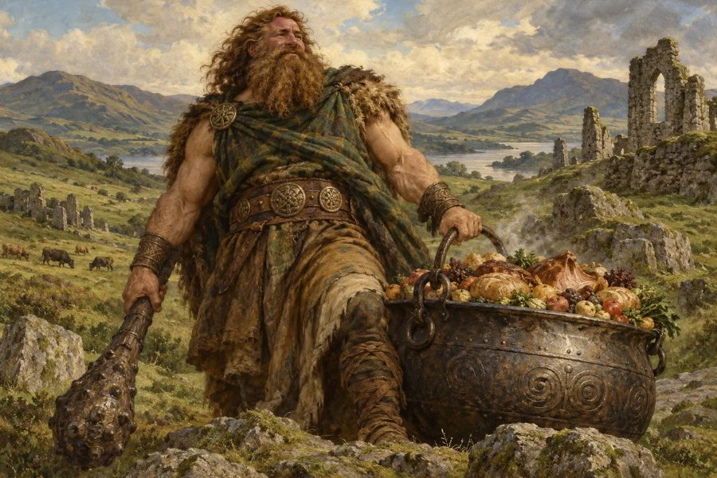
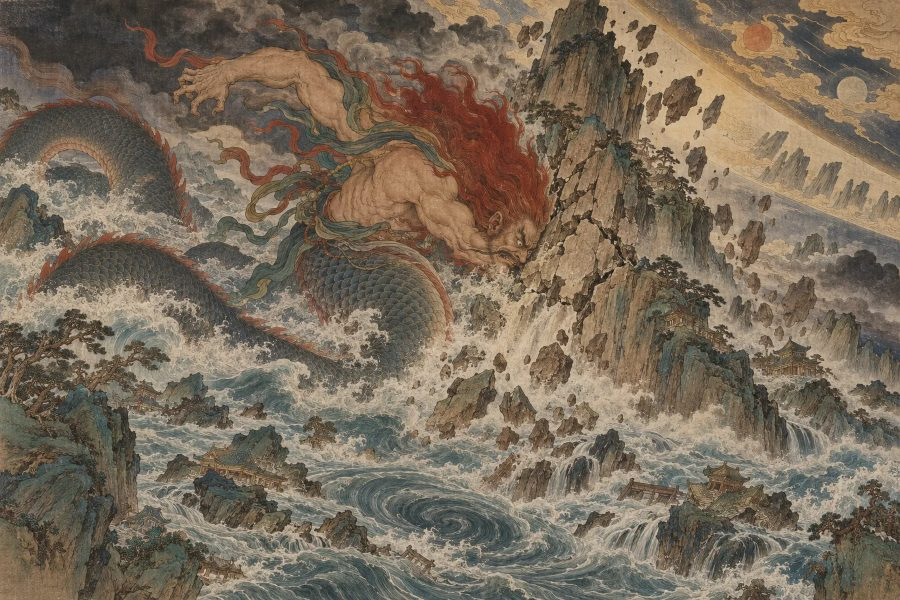

本当の正体100体の図鑑
神・霊獣・妖怪の性格と恋愛・仕事の傾向
八百万診断の主役「本当の正体」は、世界中の神話や伝承から選んだ100体。そのうち約6割が神さまで、ほかに霊獣・精霊・妖怪なども登場します。このページでは、100体すべての本質・長所・短所・恋愛・仕事の傾向を紹介します。
本当の正体の決まり方
- 生まれた日の日干（にっかん）で、100体を10体にしぼります（日干とは？）。
- その10体の中から、西洋占星術（太陽・月・アセンダントの星座の元素）と紫微斗数（命宮の主星）の結果がいちばん重なる存在を選びます。
- 出生時刻と出生地も入れると、アセンダントや紫微斗数が加わり、より精密に判定できます。
目次（日干ごと）
- 甲（きのえ）：陽の木・天に向かって伸びる大樹
- 乙（きのと）：陰の木・しなやかに広がる草花
- 丙（ひのえ）：陽の火・天を照らす太陽
- 丁（ひのと）：陰の火・闇を照らす灯火
- 戊（つちのえ）：陽の土・どっしりそびえる山
- 己（つちのと）：陰の土・作物を育てる田畑
- 庚（かのえ）：陽の金・鍛えられた剣
- 辛（かのと）：陰の金・磨かれた宝石
- 壬（みずのえ）：陽の水・果てしない大海
- 癸（みずのと）：陰の水・大地をうるおす雨
🌿 甲（きのえ）の正体10体
甲は陽の木。イメージは「天に向かって伸びる大樹」です。日干が甲の人は、次の10体のどれかが本当の正体になります。
スサノオ／伏羲（ふっき）／ダグザ／句芒（こうぼう）／ケルヌンノス／オオヤマクイ／青龍（せいりゅう）／ユグドラシル／ケイローン／グリーンマン

日本神話・神
スサノオ
「嵐を呼ぶ荒ぶる英雄」
高天原で暴れて追放されたあと、出雲でヤマタノオロチを退治して英雄となった神。荒々しさと、守るべきもののために命をかける熱さを併せ持っています。あなたも、型にはまらないエネルギーで道を切り開いていく人です。
- ✨ 長所
- 困難を前にしても逃げない突破力があります。一度心を許した相手には、とことん尽くす情の深さも魅力です。
- ⚠️ 短所
- 感情が爆発すると止まらず、周りを振り回してしまうことも。思い通りにならないと、すねてしまう子どもっぽさもあります。
- 💞 恋愛・人間関係
- 好きになったら一直線。不器用でも、全力で相手を守ろうとする頼もしさがあります。
- 💼 仕事・才能
- 停滞した状況を打ち破る改革役で輝きます。ゼロから何かを興す起業や開拓の仕事に向いています。
なりやすい条件：日干が甲／西洋占星術で「火」の星座が強い／紫微斗数の命宮に七殺・破軍
📍 ゆかりの地：須佐神社（島根県出雲市）
Wikipediaで詳しく ↗
中国神話・神
伏羲
「世界の理を読み解く始祖」
天地の様子を観察して八卦を生み出し、人々に漁や狩りの方法を教えたとされる中国の始祖神。物事の仕組みを見抜き、それを誰にでも使える形にまとめる知恵の持ち主です。
- ✨ 長所
- 全体を見渡して法則を見つける力に優れています。難しいことをわかりやすく人に伝えるのも得意です。
- ⚠️ 短所
- 理屈で考えすぎて、気持ちの面を置き去りにしがち。正しさにこだわって、融通がきかなくなることもあります。
- 💞 恋愛・人間関係
- 落ち着いた知的な会話を楽しめる相手に惹かれます。相手の話をよく聞く、信頼できるパートナーです。
- 💼 仕事・才能
- 企画や設計、教育、研究など、仕組みを作る仕事で才能を発揮します。
なりやすい条件：日干が甲／西洋占星術で「風」の星座が強い／紫微斗数の命宮に天機・紫微
📍 ゆかりの地：伏羲廟（中国・甘粛省天水）
Wikipediaで詳しく ↗
ケルト神話・神
ダグザ
「尽きない恵みの大釜を持つ父神」
食べ物が決して尽きない大釜と、命を奪いも与えもする巨大な棍棒を持つ、アイルランドの父なる神。豪快でおおらか、周りを満たすことに喜びを感じる人です。
- ✨ 長所
- 面倒見がよく、みんなを食べさせていこうとする包容力があります。どっしり構えた安心感も抜群です。
- ⚠️ 短所
- 大ざっぱで細かいことに気が回らないことも。何でも抱え込んで、自分の限界を超えてしまいがちです。
- 💞 恋愛・人間関係
- 家族や仲間を大切にする、あたたかいパートナー。一緒にいると自然とお腹も心も満たされます。
- 💼 仕事・才能
- チームをまとめるリーダーや、人をもてなす仕事、食に関わる仕事で力を発揮します。
なりやすい条件：日干が甲／西洋占星術で「地」の星座が強い／紫微斗数の命宮に天府・天梁
📍 ゆかりの地：ニューグレンジ（ブルー・ナ・ボーニャ）（アイルランド）
Wikipediaで詳しく ↗
中国神話・神
句芒
「春を運ぶ東方の芽吹きの神」
東の方角と春を司る、人の顔に鳥の体を持つ木の神。冬の眠りから命を目覚めさせる存在です。あなたも、周りに新しい始まりのきっかけを運んでくる人です。
- ✨ 長所
- 明るく軽やかで、新しいことを始める空気をつくるのが上手。季節の変わり目のように、場をすっと切り替えられます。
- ⚠️ 短所
- 始めるのは得意でも、続けるのは少し苦手。次々と興味が移ってしまうことがあります。
- 💞 恋愛・人間関係
- 一緒にいると前向きになれる、さわやかな恋人。新しい場所へ二人で出かけるのが好きです。
- 💼 仕事・才能
- 新規事業の立ち上げ、企画、広報など、物事を動かし始める役割に向いています。
なりやすい条件：日干が甲／西洋占星術で「風」の星座が強い／紫微斗数の命宮に天機・天同
Wikipediaで詳しく ↗
ケルト神話・神
ケルヌンノス
「森の獣を従える角ある王」
鹿の角を持ち、森の獣たちに囲まれて座る、豊かさと生命力の神。自然体のまま堂々としていて、まわりの生き物を引き寄せる不思議な魅力があります。
- ✨ 長所
- 生命力にあふれ、そこにいるだけで人が集まってきます。物質的な豊かさにも縁があります。
- ⚠️ 短所
- 野性的な直感で動くぶん、計画性に欠けることも。束縛されるのが大の苦手です。
- 💞 恋愛・人間関係
- 本能的に惹かれる相手と結ばれるタイプ。自由を尊重し合える関係がうまくいきます。
- 💼 仕事・才能
- 自然や動物に関わる仕事、人を惹きつける営業やプロデュースの仕事で輝きます。
なりやすい条件：日干が甲／西洋占星術で「地」の星座が強い／紫微斗数の命宮に天府・貪狼
📍 ゆかりの地：デンマーク国立博物館（デンマーク・コペンハーゲン）
Wikipediaで詳しく ↗
日本神話・神
オオヤマクイ
「山と水を治める鳴鏑の神」
比叡山の地主神として日吉大社に、また松尾大社にも祀られる山の神。鳴り響く鏑矢を持ち、山の恵みと水の流れを治めたとされます。土台を整えて、周りを長く支える人です。
- ✨ 長所
- 地道に環境を整え、人が安心して暮らせる場をつくれます。信頼を積み重ねる誠実さがあります。
- ⚠️ 短所
- 縁の下に徹しすぎて、自分の功績をアピールするのが苦手。疲れをため込みやすい面もあります。
- 💞 恋愛・人間関係
- 派手さはなくても、長く寄り添ってくれる安心感のある相手です。
- 💼 仕事・才能
- 地域づくり、インフラ、管理職、酒や食づくりなど、長い目で育てる仕事に向いています。
なりやすい条件：日干が甲／西洋占星術で「水」の星座が強い／紫微斗数の命宮に天相・天梁
📍 ゆかりの地：日吉大社（滋賀県大津市）
Wikipediaで詳しく ↗
中国の四神・霊獣
青龍
「東方を守る天翔ける龍」
東の方角と春を守る四神のひとつ。天高く昇る龍のように、大きな志と勢いを持った人です。運気の流れに乗ったときの爆発力は、誰にも止められません。
- ✨ 長所
- スケールの大きな夢を描き、実際に人を巻き込んで動かせます。ピンチでも気高さを失いません。
- ⚠️ 短所
- プライドが高く、人に頼るのが苦手。勢いのない時期は、極端に落ち込むことも。
- 💞 恋愛・人間関係
- 情熱的で、相手を大きく包み込む恋をします。尊敬し合える関係が理想です。
- 💼 仕事・才能
- リーダー、経営者、大きなプロジェクトの旗振り役で本領を発揮します。
なりやすい条件：日干が甲／西洋占星術で「火」の星座が強い／紫微斗数の命宮に紫微・破軍
📍 ゆかりの地：キトラ古墳（奈良県明日香村）
Wikipediaで詳しく ↗
北欧神話・世界樹
ユグドラシル
「九つの世界を支える大樹」
神々の国から死者の国まで、九つの世界をその枝と根で支える巨大なトネリコの木。あなたは、多くの人や物事をつなぎ、静かに支え続ける大きな器の持ち主です。
- ✨ 長所
- どんな人でも受け入れる懐の深さがあります。長い時間をかけて、確かなものを育てられます。
- ⚠️ 短所
- 支える役割を背負いすぎて、自分のことを後回しにしがち。変化に対して腰が重いこともあります。
- 💞 恋愛・人間関係
- 相手の成長をそっと見守る、包容力のある恋人。家族を大切にします。
- 💼 仕事・才能
- 組織の土台を支える管理職、人と人をつなぐ仕事、教育や福祉の分野に向いています。
なりやすい条件：日干が甲／西洋占星術で「水」の星座が強い／紫微斗数の命宮に天府・天梁
📍 ゆかりの地：ガムラ・ウプサラ（古ウプサラ）（スウェーデン）
Wikipediaで詳しく ↗
ギリシャ神話・半人半馬の賢者
ケイローン
「英雄を育てた半人半馬の賢者」
乱暴者の多いケンタウロス族の中で、ただ一人、医術・音楽・狩りに通じた賢者。アキレウスら多くの英雄を育て、死後は射手座になったと伝えられます。人を育てる天性の師匠です。
- ✨ 長所
- 知識が豊富で、相手の才能を見抜いて伸ばす力があります。面倒見がよく、頼られる存在です。
- ⚠️ 短所
- 人の世話を焼くうちに、自分の傷を後回しにしてしまうことも。少し説教くさくなりがちです。
- 💞 恋愛・人間関係
- 相手を応援し、成長させる恋をします。尊敬から始まる関係が多いタイプです。
- 💼 仕事・才能
- 教師、コーチ、医療、カウンセラーなど、人を導き育てる仕事が天職です。
なりやすい条件：日干が甲／西洋占星術で「火」の星座が強い／紫微斗数の命宮に天梁・天機
📍 ゆかりの地：ペリオン山（ギリシャ・テッサリア地方）
Wikipediaで詳しく ↗
ヨーロッパの伝承・森の精
グリーンマン
「葉に覆われた再生の顔」
教会の柱や壁に彫られた、葉っぱに覆われた不思議な顔。春の再生と生命力の象徴とされます。あなたは、何度でもよみがえる、しなやかな生命力を持った人です。
- ✨ 長所
- 落ち込んでも必ず立ち直る回復力があります。自然体で、人をほっとさせる力もあります。
- ⚠️ 短所
- マイペースすぎて、周りから何を考えているかわからないと思われることも。
- 💞 恋愛・人間関係
- 肩の力を抜いて付き合える、癒やし系の恋人です。
- 💼 仕事・才能
- 園芸、自然、アート、癒やしに関わる仕事で、のびのびと力を発揮します。
なりやすい条件：日干が甲／西洋占星術で「水」の星座が強い／紫微斗数の命宮に天同・貪狼
📍 ゆかりの地：ロスリン礼拝堂（イギリス・スコットランド）
Wikipediaで詳しく ↗🌿 乙（きのと）の正体10体
乙は陰の木。イメージは「しなやかに広がる草花」です。日干が乙の人は、次の10体のどれかが本当の正体になります。
ククリヒメ／オシリス／オモイカネ／フローラ／クシナダヒメ／スセリビメ／ドリュアス／コロポックル／マンドレイク／ケサランパサラン

日本神話・神
ククリヒメ
「争いを結び直す縁結びの女神」
黄泉の国の境で言い争うイザナギとイザナミの間に入り、何かを申し上げてその場を収めたと伝えられる白山の女神。対立する人の心をほどいて、縁を結び直す人です。
- ✨ 長所
- 相手の気持ちをくみ取り、もめごとをやわらかく収める仲裁上手。人と人をつなぐ才能があります。
- ⚠️ 短所
- みんなの意見を聞きすぎて、自分の本音を言いそびれることも。八方美人に見られる心配もあります。
- 💞 恋愛・人間関係
- 相手との縁を大切に育てるタイプ。言葉にしにくい気持ちも察してくれる、理想のパートナーです。
- 💼 仕事・才能
- 調整役、営業、カウンセラー、人事など、人と人を結ぶ仕事に向いています。
なりやすい条件：日干が乙／西洋占星術で「風」の星座が強い／紫微斗数の命宮に天相・天同
📍 ゆかりの地：白山比咩神社（石川県白山市）
Wikipediaで詳しく ↗
エジプト神話・神
オシリス
「死と再生を司る緑の王」
弟に殺されて体をばらばらにされながら、妻イシスの力でよみがえり、冥界の王となった神。緑の肌は植物の再生の象徴です。どん底から何度でもよみがえる人です。
- ✨ 長所
- 大きな挫折を経験しても、それを糧に生まれ変われる強さがあります。人の痛みにも寄り添えます。
- ⚠️ 短所
- 身近な人を信じすぎて、裏切られることも。受け身になりやすい面があります。
- 💞 恋愛・人間関係
- 支えてくれる相手との強い絆で結ばれるタイプ。苦しいときこそ愛が深まります。
- 💼 仕事・才能
- 再建や立て直し、医療・福祉、農業など、命や仕組みをよみがえらせる仕事に向いています。
なりやすい条件：日干が乙／西洋占星術で「地」の星座が強い／紫微斗数の命宮に天梁・破軍
📍 ゆかりの地：アビドス（エジプト）
Wikipediaで詳しく ↗
日本神話・神
オモイカネ
「天岩戸を開く策を練った知恵の神」
天照大御神が天岩戸に隠れたとき、長鳴鶏を鳴かせ、踊りや祭りで誘い出す作戦を考えた知恵の神。行き詰まった状況でも、必ず解決策を見つけ出す参謀です。
- ✨ 長所
- アイデアが豊富で、問題を解く筋道を描けます。人の得意を見極めて役割を割り振るのも上手です。
- ⚠️ 短所
- 考えすぎて行動が遅れがち。自分が表に立つより、裏で動くほうを選んでしまいます。
- 💞 恋愛・人間関係
- 相手を喜ばせるサプライズを考えるのが得意。知的な会話でつながる恋をします。
- 💼 仕事・才能
- 企画、戦略、コンサルタント、プロデューサーなど、知恵を武器にする仕事が天職です。
なりやすい条件：日干が乙／西洋占星術で「風」の星座が強い／紫微斗数の命宮に天機・巨門
📍 ゆかりの地：戸隠神社 中社（長野県長野市）
Wikipediaで詳しく ↗
ローマ神話・神
フローラ
「花と春をもたらす女神」
花と豊かさ、春の訪れを司るローマの女神。毎年春には、彼女をたたえるにぎやかな祭りが開かれていました。あなたは、周りに彩りと喜びを咲かせる人です。
- ✨ 長所
- 華やかで明るく、人を楽しませる天才。美しいものを見つけるセンスにも恵まれています。
- ⚠️ 短所
- 楽しいことを優先して、面倒なことを先延ばしにしがち。飽きっぽい面もあります。
- 💞 恋愛・人間関係
- 恋をすると一段と輝くタイプ。ロマンチックなデートや贈り物を大切にします。
- 💼 仕事・才能
- デザイン、美容、ファッション、イベントなど、華やかさを生かせる仕事に向いています。
なりやすい条件：日干が乙／西洋占星術で「火」の星座が強い／紫微斗数の命宮に貪狼・太陰
📍 ゆかりの地：ウフィツィ美術館（イタリア・フィレンツェ）
Wikipediaで詳しく ↗
日本神話・神
クシナダヒメ
「櫛に姿を変えて英雄を支えた稲田の姫」
ヤマタノオロチの生け贄にされかけたところをスサノオに救われ、櫛に姿を変えて彼の髪に挿され、戦いを見守った姫。実り豊かな稲田の象徴でもあります。しなやかに人を支える人です。
- ✨ 長所
- 控えめに見えて芯が強く、大切な人をそっと支え続けられます。一緒にいると心が落ち着きます。
- ⚠️ 短所
- 我慢しすぎて、限界まで気持ちを言わないことも。自己評価が低くなりがちです。
- 💞 恋愛・人間関係
- 誠実で一途。相手の夢を支えることに喜びを感じるタイプです。
- 💼 仕事・才能
- 秘書、サポート役、食や暮らしに関わる仕事で信頼を集めます。
なりやすい条件：日干が乙／西洋占星術で「水」の星座が強い／紫微斗数の命宮に太陰・天相
📍 ゆかりの地：八重垣神社（島根県松江市）
Wikipediaで詳しく ↗
日本神話・神
スセリビメ
「試練に立ち向かう情熱の姫」
スサノオの娘。父が大国主に与えた蛇の部屋や蜂の部屋の試練を、ひそかに道具を渡して助け、駆け落ちのように結ばれた姫。激しいほどの愛情と行動力の持ち主です。
- ✨ 長所
- 愛する人のためなら、権威にも立ち向かえる勇気があります。決めたら迷わない行動力も魅力です。
- ⚠️ 短所
- 愛情が深いぶん、嫉妬心も強め。感情がそのまま態度に出てしまうことがあります。
- 💞 恋愛・人間関係
- 情熱的で一途。障害があるほど燃え上がる、ドラマチックな恋をします。
- 💼 仕事・才能
- 情熱を注げる仕事なら、誰よりも成果を出します。表現や接客の仕事にも向いています。
なりやすい条件：日干が乙／西洋占星術で「火」の星座が強い／紫微斗数の命宮に廉貞・太陽
📍 ゆかりの地：出雲大社（島根県出雲市）
Wikipediaで詳しく ↗
ギリシャ神話・木の精
ドリュアス
「木と命をともにする森の精霊」
樫などの木に宿り、その木と生死をともにするといわれる森のニンフ。自分の居場所を大切にし、そこに深く根を張って生きる人です。
- ✨ 長所
- 穏やかでやさしく、身近な人や場所への愛情が深いです。自然のリズムを大切にできます。
- ⚠️ 短所
- 環境の変化が苦手で、慣れた場所から動きたがらないことも。傷つきやすい一面もあります。
- 💞 恋愛・人間関係
- 静かで安らげる関係を望みます。長く一緒にいるほど絆が深まるタイプです。
- 💼 仕事・才能
- 自然や植物、インテリア、地域に根ざした仕事で力を発揮します。
なりやすい条件：日干が乙／西洋占星術で「地」の星座が強い／紫微斗数の命宮に天同・太陰
Wikipediaで詳しく ↗
アイヌの伝承・小人
コロポックル
「蕗の葉の下に住む小さな隣人」
アイヌの伝承で、蕗の葉の下に住むといわれる小さな人々。姿を見せずに獲物を分けてくれる、心やさしい隣人として語られます。さりげない気配りで人を幸せにする人です。
- ✨ 長所
- 人が気づかないところで役に立つ、思いやりの人。小さなことにも喜びを見つけられます。
- ⚠️ 短所
- 恥ずかしがりで、自分から前に出るのは苦手。正体を見られることを嫌うところもあります。
- 💞 恋愛・人間関係
- 照れ屋だけど、こっそり尽くすタイプ。小さなプレゼントで気持ちを伝えます。
- 💼 仕事・才能
- 裏方やサポート、手仕事、子どもに関わる仕事で、かけがえのない存在になります。
なりやすい条件：日干が乙／西洋占星術で「風」の星座が強い／紫微斗数の命宮に天同・天相
📍 ゆかりの地：阿寒湖アイヌコタン（北海道釧路市）
Wikipediaで詳しく ↗
ヨーロッパの伝承・魔草
マンドレイク
「引き抜くと叫ぶ魔法の草」
人の形をした根を持ち、引き抜くと恐ろしい叫び声を上げると伝わる魔法の植物。薬にも毒にもなります。普段は静かでも、内に強い力を秘めた人です。
- ✨ 長所
- 物事の裏側まで見抜く鋭さがあります。いざというときの一言に、驚くほどの影響力があります。
- ⚠️ 短所
- 警戒心が強く、心を開くまでに時間がかかります。怒らせると手がつけられないことも。
- 💞 恋愛・人間関係
- 深く狭い付き合いを好みます。一度信頼した相手には、驚くほど情が深くなります。
- 💼 仕事・才能
- 研究、薬や医療、専門職など、深い知識を生かす仕事に向いています。
なりやすい条件：日干が乙／西洋占星術で「水」の星座が強い／紫微斗数の命宮に巨門・廉貞
Wikipediaで詳しく ↗
日本の伝承・謎の生き物
ケサランパサラン
「持つと幸せが訪れるという白い毛玉」
ふわふわと宙を漂う白い毛玉のような謎の存在。持っていると幸せが訪れるといわれ、昭和には大ブームになりました。いるだけで場を和ませる、不思議な幸運の持ち主です。
- ✨ 長所
- ふんわりとした雰囲気で、まわりに幸運を運んできます。誰からも好かれる愛されキャラです。
- ⚠️ 短所
- 風まかせで、自分の意見を持たないように見られることも。決断を人に任せがちです。
- 💞 恋愛・人間関係
- いつの間にか好かれているタイプ。一緒にいると相手まで幸せになります。
- 💼 仕事・才能
- 接客、癒やし、エンタメなど、人を笑顔にする仕事で愛されます。
なりやすい条件：日干が乙／西洋占星術で「水」の星座が強い／紫微斗数の命宮に天同・貪狼
Wikipediaで詳しく ↗🔥 丙（ひのえ）の正体10体
丙は陽の火。イメージは「天を照らす太陽」です。日干が丙の人は、次の10体のどれかが本当の正体になります。
ラー／ケツァルコアトル／セクメト／インティ／ニニギ／ルー／朱雀（すざく）／フェニックス／八咫烏（やたがらす）／鳳凰（ほうおう）

エジプト神話・神
ラー
「天空を渡る太陽の王」
隼の頭に太陽の円盤を載せ、昼は太陽の船で天空を渡り、夜は冥界を旅するエジプトの太陽神。生まれながらの王者の風格を持ち、周りを照らし続ける人です。
- ✨ 長所
- 圧倒的な存在感とリーダーシップがあります。毎日欠かさず昇る太陽のように、ぶれない継続力も持っています。
- ⚠️ 短所
- 自分が中心でないと気が済まないことも。プライドを傷つけられると強く反発します。
- 💞 恋愛・人間関係
- 相手を守り、引っ張っていく王様タイプ。尊敬されることで愛情が深まります。
- 💼 仕事・才能
- 経営者、リーダー、表舞台に立つ仕事で、最も輝きます。
なりやすい条件：日干が丙／西洋占星術で「火」の星座が強い／紫微斗数の命宮に紫微・太陽
📍 ゆかりの地：ヘリオポリスのオベリスク（エジプト・カイロ）
Wikipediaで詳しく ↗
アステカ神話・神
ケツァルコアトル
「文明を授けた羽毛ある蛇」
羽毛に覆われた蛇の姿をしたアステカの神。人々に農耕や暦、学問を授けた文化の英雄として崇められました。知恵と理想で世界を良くしようとする人です。
- ✨ 長所
- 理想を掲げ、知識を惜しみなく人に分け与えます。新しい文化や流行を生み出す力もあります。
- ⚠️ 短所
- 理想が高すぎて、現実とのギャップに苦しむことも。去り際があっさりしすぎる面もあります。
- 💞 恋愛・人間関係
- 知的な刺激をくれる相手と、高め合う恋をします。
- 💼 仕事・才能
- 教育、研究、文化事業、テクノロジーなど、世の中を前に進める仕事に向いています。
なりやすい条件：日干が丙／西洋占星術で「風」の星座が強い／紫微斗数の命宮に天機・天梁
📍 ゆかりの地：テオティワカン（ケツァルコアトルの神殿）（メキシコ）
Wikipediaで詳しく ↗
エジプト神話・神
セクメト
「太陽の目から生まれた獅子の女神」
太陽神ラーの目から生まれた、雌ライオンの頭を持つ戦いの女神。怒れば疫病をもたらし、なだめれば病を癒やすとされました。激しさと癒やしの両方を持つ人です。
- ✨ 長所
- いざというときの爆発的な行動力があります。仲間を守るためなら、どんな相手にも立ち向かえます。
- ⚠️ 短所
- 怒りに火がつくと、なかなか収まりません。極端から極端へ振れやすい面もあります。
- 💞 恋愛・人間関係
- 愛情表現は情熱的でストレート。自分を落ち着かせてくれる相手と相性抜群です。
- 💼 仕事・才能
- 医療、救急、スポーツ、交渉ごとなど、強さと癒やしを両方生かせる仕事に向いています。
なりやすい条件：日干が丙／西洋占星術で「火」の星座が強い／紫微斗数の命宮に七殺・廉貞
📍 ゆかりの地：カルナック神殿（プタハ神殿）（エジプト・ルクソール）
Wikipediaで詳しく ↗インカ神話・神
インティ
「黄金の国を照らす太陽神」
インカ帝国で最も崇められた太陽の神。皇帝はインティの子孫とされ、黄金は「太陽の汗」と呼ばれました。豊かさと実りをもたらす、あたたかな光の人です。
- ✨ 長所
- 惜しみなく人に与えるおおらかさがあります。周りを豊かにしながら、自分も豊かになれます。
- ⚠️ 短所
- 与えすぎて疲れてしまうことも。見返りがないと、ふと寂しくなる面もあります。
- 💞 恋愛・人間関係
- 相手を全力で幸せにしようとする、あたたかい恋人です。
- 💼 仕事・才能
- 経営、金融、農業や食の分野など、豊かさを生み出す仕事に向いています。
なりやすい条件：日干が丙／西洋占星術で「地」の星座が強い／紫微斗数の命宮に太陽・天府
📍 ゆかりの地：コリカンチャ（太陽の神殿）（ペルー・クスコ）
Wikipediaで詳しく ↗
日本神話・神
ニニギ
「地上に降り立った天孫」
天照大御神の孫として、三種の神器を携えて高千穂の峰に降り立った神。コノハナサクヤビメと結ばれる一方、姉のイワナガヒメを返したため、人の命に限りが生まれたとも伝わります。大きな使命を背負って新天地に立つ人です。
- ✨ 長所
- 生まれ持った品格と、新しい場所に根を下ろす開拓力があります。周りから自然と支えられます。
- ⚠️ 短所
- 見た目や第一印象で判断してしまうことも。大事な選択を急ぎすぎる面もあります。
- 💞 恋愛・人間関係
- 一目ぼれから始まる恋が多いタイプ。相手の内面までよく見ると、幸せが長続きします。
- 💼 仕事・才能
- 新しい拠点づくり、事業の立ち上げ、伝統を受け継ぐ仕事で力を発揮します。
なりやすい条件：日干が丙／西洋占星術で「地」の星座が強い／紫微斗数の命宮に紫微・天相
📍 ゆかりの地：高千穂（宮崎県高千穂町）
Wikipediaで詳しく ↗
ケルト神話・神
ルー
「あらゆる技に通じた光の神」
鍛冶、戦い、詩、医術など、あらゆる技に通じていたことから「多くの技を持つ者」と呼ばれたケルトの光の神。何でもこなせる、輝くような多才の持ち主です。
- ✨ 長所
- 器用で飲み込みが早く、どんな分野でも頭角を現します。新しいことを学ぶのが大好きです。
- ⚠️ 短所
- 何でもできるぶん、一つに絞れずに迷うことも。器用貧乏になりがちです。
- 💞 恋愛・人間関係
- 話題が豊富で、一緒にいて飽きない恋人。相手のどんな面にも合わせられます。
- 💼 仕事・才能
- マルチな才能を生かせる仕事、プロデューサーやクリエイター、技術職に向いています。
なりやすい条件：日干が丙／西洋占星術で「風」の星座が強い／紫微斗数の命宮に貪狼・天機
📍 ゆかりの地：リヨン（フランス）
Wikipediaで詳しく ↗
中国の四神・霊獣
朱雀
「南を守る炎の霊鳥」
南の方角と夏を守る、真っ赤な炎の翼を持つ四神のひとつ。燃えるような情熱と、華やかな存在感で人を惹きつける人です。
- ✨ 長所
- 明るく情熱的で、場の空気を一気に熱くできます。表現力と華やかさは天下一品です。
- ⚠️ 短所
- 熱しやすく冷めやすいところがあります。気分によって態度が変わりやすい面も。
- 💞 恋愛・人間関係
- 情熱的で華やかな恋を楽しむタイプ。愛情表現もストレートです。
- 💼 仕事・才能
- 芸能、広告、営業、イベントなど、人の心に火をつける仕事に向いています。
なりやすい条件：日干が丙／西洋占星術で「火」の星座が強い／紫微斗数の命宮に太陽・破軍
📍 ゆかりの地：キトラ古墳（奈良県明日香村）
Wikipediaで詳しく ↗
西洋の伝説・霊鳥
フェニックス
「炎の中からよみがえる不死の鳥」
寿命が近づくと自ら炎に飛び込み、その灰の中から若い姿でよみがえるといわれる伝説の鳥。終わりと始まりを繰り返しながら、より強くなっていく人です。
- ✨ 長所
- 失敗や別れを経験するたびに、ひと回り大きくなれます。絶望の中でも希望を見つけられます。
- ⚠️ 短所
- リセット願望が強く、積み上げたものを自分で壊してしまうことも。
- 💞 恋愛・人間関係
- 失恋をばねに成長するタイプ。本当の相手とは、運命的な再会をすることもあります。
- 💼 仕事・才能
- 立て直しや転職、新しい分野への挑戦で、驚くほどの成果を出します。
なりやすい条件：日干が丙／西洋占星術で「水」の星座が強い／紫微斗数の命宮に破軍・天同
Wikipediaで詳しく ↗
日本神話・霊鳥
八咫烏
「迷う者を導く三本足の烏」
神武天皇が熊野の山中で道に迷ったとき、大和への道を案内した神の使いの烏。三本の足を持つとされます。人の進むべき道を照らす、導き手の人です。
- ✨ 長所
- 状況を見抜き、迷っている人に的確な道を示せます。サッカー日本代表のシンボルにもなった、勝利の導き手です。
- ⚠️ 短所
- 人を導くことに熱心なあまり、自分の進路は後回しにしがち。
- 💞 恋愛・人間関係
- 相手の夢を応援し、一緒に道を切り開くパートナーになります。
- 💼 仕事・才能
- コンサルタント、ガイド、教育、ナビゲーター的な仕事で信頼されます。
なりやすい条件：日干が丙／西洋占星術で「風」の星座が強い／紫微斗数の命宮に天相・天機
📍 ゆかりの地：熊野本宮大社（和歌山県田辺市）
Wikipediaで詳しく ↗
中国の伝承・霊鳥
鳳凰
「天下太平の世に現れる瑞鳥」
優れた王が現れ、世の中が平和になるときに姿を見せるといわれるめでたい鳥。平等院鳳凰堂の屋根にも飾られています。いるだけで場に品格と穏やかさをもたらす人です。
- ✨ 長所
- 優雅で品があり、争いを嫌う平和主義者。周りの空気をやわらげる力があります。
- ⚠️ 短所
- 環境が整っていないと実力を発揮しにくいところも。理想の場所を探し続けてしまいます。
- 💞 恋愛・人間関係
- 相手を大切にする、優雅でやさしい恋人。おだやかな関係を築きます。
- 💼 仕事・才能
- 伝統文化、芸術、ブランドづくりなど、品格が求められる仕事に向いています。
なりやすい条件：日干が丙／西洋占星術で「水」の星座が強い／紫微斗数の命宮に太陰・天同
📍 ゆかりの地：平等院鳳凰堂（京都府宇治市）
Wikipediaで詳しく ↗🔥 丁（ひのと）の正体10体
丁は陰の火。イメージは「闇を照らす灯火」です。日干が丁の人は、次の10体のどれかが本当の正体になります。
ヘカテー／ブリギッド／イシュタル／ハトホル／愛染明王（あいぜんみょうおう）／不動明王（ふどうみょうおう）／サラマンダー／猫又（ねこまた）／ウィルオウィスプ／イフリート

ギリシャ神話・神
ヘカテー
「松明を掲げて三叉路に立つ魔術の女神」
松明を手に、道が分かれる三叉路に立つ魔術と夜の女神。冥界へ連れ去られたペルセポネを探すデメテルを、松明で照らして助けたともいわれます。見えないものを見抜き、人の迷いに灯をともす人です。
- ✨ 長所
- 直感が鋭く、人の隠れた本心や物事の裏側を見抜けます。迷っている人の背中を押せます。
- ⚠️ 短所
- 秘密主義で、なかなか本音を見せません。闇の部分に惹かれすぎることもあります。
- 💞 恋愛・人間関係
- ミステリアスな魅力で人を惹きつけます。深い部分でわかり合える相手を求めます。
- 💼 仕事・才能
- 占い、心理、研究、調査など、見えないものを扱う仕事に向いています。
なりやすい条件：日干が丁／西洋占星術で「水」の星座が強い／紫微斗数の命宮に巨門・太陰
📍 ゆかりの地：ラギナ遺跡（トルコ・ムーラ県）
Wikipediaで詳しく ↗
ケルト神話・神
ブリギッド
「炉と詩と癒やしの炎を守る女神」
詩と鍛冶と癒やしを司る、炎の女神。アイルランドでは後に聖ブリギッドとして信仰が受け継がれ、その炎は長く絶やさず守られたといいます。人の心に消えない火をともす人です。
- ✨ 長所
- 創造力とやさしさを兼ね備え、人を励ますのが上手。言葉にも手仕事にも才能があります。
- ⚠️ 短所
- 人の世話をしすぎて燃え尽きることも。自分の休み時間を大切にしましょう。
- 💞 恋愛・人間関係
- 相手の心をあたためる、包容力のある恋人です。
- 💼 仕事・才能
- 作家、職人、医療・看護、教育など、創造と癒やしの仕事が天職です。
なりやすい条件：日干が丁／西洋占星術で「火」の星座が強い／紫微斗数の命宮に太陽・天梁
📍 ゆかりの地：キルデア（アイルランド）
Wikipediaで詳しく ↗
メソポタミア神話・神
イシュタル
「愛と戦いを司る明けの明星」
愛と美、そして戦いを司る古代メソポタミアの女神で、金星の化身とされました。冥界にまで乗り込んだ大胆さでも知られます。情熱と強さで欲しいものをつかむ人です。
- ✨ 長所
- 人を惹きつける強烈な魅力と、目標に向かって突き進む行動力があります。
- ⚠️ 短所
- 欲しいものへの執着が強く、思い通りにならないと激しく怒ることも。
- 💞 恋愛・人間関係
- 恋愛体質で情熱的。駆け引きよりも、まっすぐな愛をぶつけるタイプです。
- 💼 仕事・才能
- 営業、芸能、交渉、起業など、魅力と勝負強さを生かせる仕事に向いています。
なりやすい条件：日干が丁／西洋占星術で「火」の星座が強い／紫微斗数の命宮に貪狼・七殺
📍 ゆかりの地：ペルガモン博物館（イシュタル門）（ドイツ・ベルリン）
Wikipediaで詳しく ↗
エジプト神話・神
ハトホル
「音楽と喜びを愛する慈愛の女神」
牛の角と太陽の円盤を頭にいただく、愛と音楽と喜びの女神。踊りや宴を好み、人々を守る母のような存在として親しまれました。人生の楽しみ方を知っている人です。
- ✨ 長所
- 明るくやさしく、周りに喜びを広げられます。音楽や美しいものへの感性も豊かです。
- ⚠️ 短所
- 楽しいことに流されやすく、つい浪費してしまうことも。
- 💞 恋愛・人間関係
- 愛情深く、相手を心から楽しませるタイプ。一緒にいると毎日がお祭りのようです。
- 💼 仕事・才能
- 音楽、美容、エンタメ、接客など、人に喜びを届ける仕事に向いています。
なりやすい条件：日干が丁／西洋占星術で「地」の星座が強い／紫微斗数の命宮に太陰・天同
📍 ゆかりの地：デンデラのハトホル神殿（エジプト）
Wikipediaで詳しく ↗
仏教・明王
愛染明王
「愛欲を悟りの力に変える紅の明王」
全身を真っ赤に燃やし、人の愛欲や煩悩をそのまま悟りへのエネルギーに変えるとされる明王。縁結びの仏としても信仰されています。強い想いを力に変えられる人です。
- ✨ 長所
- 欲や情熱を否定せず、前に進む原動力にできます。人を惹きつける熱量があります。
- ⚠️ 短所
- 思い込みが激しく、一つのことにのめり込みすぎることも。
- 💞 恋愛・人間関係
- 愛情は深く熱いタイプ。縁を大切にし、一度結んだ絆を手放しません。
- 💼 仕事・才能
- 情熱を注げる仕事で驚くほどの成果を出します。芸術、営業、恋愛・美容関係にも向いています。
なりやすい条件：日干が丁／西洋占星術で「火」の星座が強い／紫微斗数の命宮に廉貞・貪狼
📍 ゆかりの地：勝鬘院 愛染堂（大阪府大阪市）
Wikipediaで詳しく ↗
仏教・明王
不動明王
「炎を背負い迷いを断ち切る明王」
燃えさかる炎を背に、右手に剣、左手に縄を持ち、恐ろしい顔で人々の迷いを断ち切る明王。どんな困難にも動じない、揺るぎない意志の人です。
- ✨ 長所
- 一度決めたことは最後までやり抜く強さがあります。厳しさの奥に深い思いやりがあります。
- ⚠️ 短所
- 頑固で融通がきかないことも。表情が怖く見えて、誤解されやすい面もあります。
- 💞 恋愛・人間関係
- 口数は少なくても、一途に守り続ける誠実な恋人です。
- 💼 仕事・才能
- 警察、消防、職人、経営など、責任と覚悟が求められる仕事に向いています。
なりやすい条件：日干が丁／西洋占星術で「地」の星座が強い／紫微斗数の命宮に七殺・武曲
📍 ゆかりの地：成田山新勝寺（千葉県成田市）
Wikipediaで詳しく ↗
錬金術の伝承・火の精霊
サラマンダー
「炎の中に棲む火の精霊」
錬金術師パラケルススが唱えた四大精霊のうち、火を司る精霊。炎の中でも焼けずに生きるといわれます。逆境の熱の中でこそ、生き生きと輝く人です。
- ✨ 長所
- プレッシャーや逆境に強く、追い込まれるほど力を発揮します。変化を楽しめます。
- ⚠️ 短所
- 平穏すぎると退屈してしまい、わざと波風を立てることも。
- 💞 恋愛・人間関係
- 刺激的な恋が好き。情熱が冷めないよう、新しい体験を一緒に楽しめる相手が◎。
- 💼 仕事・才能
- ベンチャー、技術職、トラブル対応など、熱い現場で活躍します。
なりやすい条件：日干が丁／西洋占星術で「風」の星座が強い／紫微斗数の命宮に廉貞・破軍
📍 ゆかりの地：ザルツブルク（オーストリア）
Wikipediaで詳しく ↗
日本の妖怪・妖怪
猫又
「年を経て尾が二つに分かれた化け猫」
長く生きた猫の尾が二つに分かれ、人の言葉を話したり、化けたりするようになった妖怪。気まぐれで賢く、自分の生き方を貫く人です。
- ✨ 長所
- 頭の回転が速く、世渡り上手。自分の好きなことには驚くほどの集中力を見せます。
- ⚠️ 短所
- 気分屋で、興味のないことには見向きもしません。皮肉を言ってしまうことも。
- 💞 恋愛・人間関係
- ツンデレで気まぐれ。でも心を許した相手には、ふと甘える一面を見せます。
- 💼 仕事・才能
- クリエイター、フリーランス、専門職など、自分のペースで働ける仕事に向いています。
なりやすい条件：日干が丁／西洋占星術で「風」の星座が強い／紫微斗数の命宮に巨門・貪狼
📍 ゆかりの地：猫又山（富山県黒部市）
Wikipediaで詳しく ↗
ヨーロッパの伝承・怪火
ウィルオウィスプ
「夜の沼に揺れる迷いの灯」
夜の沼地や荒れ野に現れ、旅人を惑わすといわれる不思議な光。つかまえようとすると遠ざかります。神秘的で、人を惹きつけてやまない人です。
- ✨ 長所
- 想像力が豊かで、人の心を動かす不思議な魅力があります。発想が自由です。
- ⚠️ 短所
- 気持ちが移ろいやすく、本心がつかみにくいと思われることも。
- 💞 恋愛・人間関係
- 追いかけたくなる魅力の持ち主。安心感をくれる相手と出会うと落ち着きます。
- 💼 仕事・才能
- アート、映像、物語づくりなど、想像力を生かせる仕事に向いています。
なりやすい条件：日干が丁／西洋占星術で「水」の星座が強い／紫微斗数の命宮に天機・太陰
Wikipediaで詳しく ↗
イスラムの伝承・魔神
イフリート
「煙なき炎から生まれた魔神」
煙のない炎から生まれた精霊ジンの中でも、特に強大な力を持つ魔神。『千夜一夜物語』などに登場します。圧倒的なパワーを秘めた人です。
- ✨ 長所
- とてつもない実行力と馬力があります。頼まれたことは、驚くような形でやり遂げます。
- ⚠️ 短所
- 力が強すぎて、周りを圧倒してしまうことも。約束や契約には厳しい面があります。
- 💞 恋愛・人間関係
- 相手のためなら何でもかなえようとする、豪快な恋人です。
- 💼 仕事・才能
- 建設、エネルギー、大規模なプロジェクトなど、力が求められる仕事で活躍します。
なりやすい条件：日干が丁／西洋占星術で「地」の星座が強い／紫微斗数の命宮に破軍・武曲
Wikipediaで詳しく ↗⛰️ 戊（つちのえ）の正体10体
戊は陽の土。イメージは「どっしりそびえる山」です。日干が戊の人は、次の10体のどれかが本当の正体になります。
盤古（ばんこ）／大黒天（だいこくてん）／アメノタヂカラオ／ゲブ／后土（こうど）／プタハ／麒麟（きりん）／スフィンクス／ゴーレム／ベヒモス

中国神話・神
盤古
「体が天地になった創世の巨人」
混沌の卵から生まれ、天と地を押し広げ続けた巨人。死後、その体は山や川、太陽や月になったと伝わります。自分を捧げて大きなものを生み出す人です。
- ✨ 長所
- スケールが大きく、長い年月をかけて大事業を成し遂げる力があります。
- ⚠️ 短所
- 一人で全部背負おうとして、無理をしがち。周りに頼ることも覚えましょう。
- 💞 恋愛・人間関係
- 相手の世界をまるごと支える、大きな愛の持ち主です。
- 💼 仕事・才能
- 経営、建設、都市計画など、長期的で大きな仕事に向いています。
なりやすい条件：日干が戊／西洋占星術で「地」の星座が強い／紫微斗数の命宮に紫微・天府
Wikipediaで詳しく ↗
仏教・七福神・神
大黒天
「打ち出の小槌で福を招く豊穣の神」
インドの神マハーカーラが仏教に取り入れられ、日本では大国主と結びついて、米俵に乗り打ち出の小槌を持つ福の神になりました。豊かさを呼び込み、蓄える力の持ち主です。
- ✨ 長所
- 金運と人望に恵まれ、笑顔で人を集めます。堅実にためる力もあります。
- ⚠️ 短所
- お金や物に執着しすぎることも。現状維持を好み、冒険を避けがちです。
- 💞 恋愛・人間関係
- 家族を大切にし、生活の安定を守る頼れるパートナーです。
- 💼 仕事・才能
- 金融、商売、経営、食に関わる仕事で、豊かさを生み出します。
なりやすい条件：日干が戊／西洋占星術で「地」の星座が強い／紫微斗数の命宮に天府・武曲
📍 ゆかりの地：比叡山延暦寺 大黒堂（滋賀県大津市）
Wikipediaで詳しく ↗
日本神話・神
アメノタヂカラオ
「天岩戸をこじ開けた怪力の神」
天照大御神が天岩戸から少し顔をのぞかせた瞬間、その手を取って外へ引き出し、世界に光を取り戻した力の神。ここぞという一瞬を逃さない人です。
- ✨ 長所
- タイミングを見極めて、一気に決める力があります。体力と根性も抜群です。
- ⚠️ 短所
- 力で解決しようとしがち。細かい話し合いは少し苦手です。
- 💞 恋愛・人間関係
- 頼りがいのある、守ってくれる恋人。言葉より行動で愛を示します。
- 💼 仕事・才能
- スポーツ、現場仕事、救助など、体と決断力を使う仕事で活躍します。
なりやすい条件：日干が戊／西洋占星術で「火」の星座が強い／紫微斗数の命宮に七殺・天梁
📍 ゆかりの地：戸隠神社 奥社（長野県長野市）
Wikipediaで詳しく ↗
エジプト神話・神
ゲブ
「天の女神を見上げる大地の神」
横たわる体が大地そのものとされ、覆いかぶさる天空の女神ヌトと夫婦の神。植物は彼の体から育つと考えられました。大きな器で、すべてを受け止める人です。
- ✨ 長所
- 包容力があり、どんな人でも受け入れます。実りを育てる根気強さもあります。
- ⚠️ 短所
- 受け身になりがちで、自分から動き出すのに時間がかかることも。
- 💞 恋愛・人間関係
- 相手を見守り続ける、ゆるがない愛の持ち主です。
- 💼 仕事・才能
- 農業、不動産、福祉、土台を支える管理の仕事に向いています。
なりやすい条件：日干が戊／西洋占星術で「水」の星座が強い／紫微斗数の命宮に天府・天梁
📍 ゆかりの地：エジプト考古学博物館（エジプト・カイロ）
Wikipediaで詳しく ↗
中国神話・神
后土
「大地と死者を守る母なる土の神」
大地そのものを神格化した中国の神で、天の神とならんで古くから祀られてきました。土地と、そこに眠る祖先を見守る存在です。目に見えない根っこを大切にする人です。
- ✨ 長所
- 人のルーツや歴史を大切にし、周りに安心感を与えます。面倒見のよさも抜群です。
- ⚠️ 短所
- 伝統や過去にこだわりすぎて、新しい変化を受け入れにくいことも。
- 💞 恋愛・人間関係
- 家族ぐるみの付き合いを大切にする、あたたかい恋人です。
- 💼 仕事・才能
- 地域、歴史、福祉、不動産など、土地や人の根っこに関わる仕事に向いています。
なりやすい条件：日干が戊／西洋占星術で「水」の星座が強い／紫微斗数の命宮に天梁・太陰
📍 ゆかりの地：后土祠（中国・山西省万栄）
Wikipediaで詳しく ↗
エジプト神話・神
プタハ
「言葉で世界を形づくった創造の職人神」
心で考え、言葉にすることで世界を創ったとされるエジプトの創造神で、職人や建築家の守り神。アイデアを確かな形にする、ものづくりの達人です。
- ✨ 長所
- 頭に描いたものを、きちんと形にする実行力があります。細部へのこだわりも一流です。
- ⚠️ 短所
- 完璧を求めすぎて、なかなか完成させられないことも。
- 💞 恋愛・人間関係
- 相手のために何かを作るのが好き。手間を惜しまない愛情表現をします。
- 💼 仕事・才能
- 職人、エンジニア、建築、デザインなど、ものづくりの仕事が天職です。
なりやすい条件：日干が戊／西洋占星術で「風」の星座が強い／紫微斗数の命宮に天機・武曲
📍 ゆかりの地：メンフィス遺跡（エジプト）
Wikipediaで詳しく ↗
中国の伝承・霊獣
麒麟
「仁の心をもつ聖なる霊獣」
優れた王が仁のある政治を行うときに現れるとされる霊獣。生き物を踏まないように歩き、草も折らないほどやさしいといわれます。五行では中央・土を象徴します。
- ✨ 長所
- 思いやりが深く、争いを好まない平和主義者。品格があり、自然と尊敬を集めます。
- ⚠️ 短所
- やさしすぎて、厳しい決断を先延ばしにすることも。
- 💞 恋愛・人間関係
- 相手を傷つけないよう、細やかに気を配る恋人です。
- 💼 仕事・才能
- 教育、福祉、公務、仲裁など、人のための仕事で輝きます。
なりやすい条件：日干が戊／西洋占星術で「風」の星座が強い／紫微斗数の命宮に天梁・天同
📍 ゆかりの地：日本橋の麒麟像（東京都中央区）
Wikipediaで詳しく ↗
エジプト・ギリシャの伝承・幻獣
スフィンクス
「謎を問いかける門の守護者」
獅子の体に人の顔を持つ守護者。エジプトではピラミッドを守り、ギリシャでは旅人に謎をかけ、解けない者を食べたと伝わります。知恵で人を試す、門番の人です。
- ✨ 長所
- 知識と洞察力に優れ、物事の本質を見抜けます。簡単に人を信用しない慎重さもあります。
- ⚠️ 短所
- 相手を試すような態度をとってしまうことも。理屈っぽくなりがちです。
- 💞 恋愛・人間関係
- 知的な相手に惹かれます。自分の謎を解いてくれる人に心を開きます。
- 💼 仕事・才能
- 研究、試験・審査、法律、セキュリティなど、判断力を生かす仕事に向いています。
なりやすい条件：日干が戊／西洋占星術で「風」の星座が強い／紫微斗数の命宮に巨門・天機
📍 ゆかりの地：ギザの大スフィンクス（エジプト・ギザ）
Wikipediaで詳しく ↗
ユダヤの伝承・人造の巨人
ゴーレム
「言葉の力で動き出す土の巨人」
泥でつくられ、額の文字の力で命を吹き込まれた巨人。プラハのラビがつくったゴーレムの伝説が有名です。与えられた役目を黙々と果たす、忠実な働き者です。
- ✨ 長所
- まじめで粘り強く、決められたことをきっちりやり遂げます。頼まれごとへの信頼は抜群です。
- ⚠️ 短所
- 融通がきかず、指示がないと動けないことも。言葉で気持ちを伝えるのが苦手です。
- 💞 恋愛・人間関係
- 派手さはないけれど、ずっとそばで守り続ける誠実な恋人です。
- 💼 仕事・才能
- 製造、管理、警備、職人仕事など、正確さと継続力が求められる仕事に向いています。
なりやすい条件：日干が戊／西洋占星術で「地」の星座が強い／紫微斗数の命宮に武曲・天相
📍 ゆかりの地：旧新シナゴーグ（チェコ・プラハ）
Wikipediaで詳しく ↗
旧約聖書・巨獣
ベヒモス
「陸の頂点に立つ巨獣」
旧約聖書「ヨブ記」に登場する、陸で最も強大な獣。骨は青銅、手足は鉄の棒のようだと描かれます。海のリヴァイアサンと対になる存在です。圧倒的なパワーの持ち主です。
- ✨ 長所
- どんな壁も押し倒す圧倒的な行動力があります。存在感だけで場を制します。
- ⚠️ 短所
- 力任せに進みがちで、周りが置いていかれることも。
- 💞 恋愛・人間関係
- 豪快で頼もしい恋人。全力で相手を守ります。
- 💼 仕事・才能
- 建設、スポーツ、大規模な改革など、パワーが必要な場面で活躍します。
なりやすい条件：日干が戊／西洋占星術で「火」の星座が強い／紫微斗数の命宮に破軍・七殺
Wikipediaで詳しく ↗⛰️ 己（つちのと）の正体10体
己は陰の土。イメージは「作物を育てる田畑」です。日干が己の人は、次の10体のどれかが本当の正体になります。
女媧（じょか）／イシス／イワナガヒメ／トヨウケビメ／地蔵菩薩（じぞうぼさつ）／狛犬（こまいぬ）／獏（ばく）／ノーム／ドワーフ／山姥（やまんば）

中国神話・神
女媧
「泥から人を生み、天の穴をふさいだ女神」
黄土をこねて人間をつくり、天が崩れたときには五色の石を練って空の穴をふさいだとされる、人類の母なる女神。壊れたものを直し、命を育む人です。
- ✨ 長所
- 困っている人を見過ごせない、深い母性があります。崩れかけたものを立て直す力も持っています。
- ⚠️ 短所
- 人の面倒を見すぎて、自分が疲れ切ってしまうことも。
- 💞 恋愛・人間関係
- 相手を包み込み、育てるような愛し方をします。家族への愛情も人一倍です。
- 💼 仕事・才能
- 教育、保育、医療、修理や再建など、育てる・直す仕事に向いています。
なりやすい条件：日干が己／西洋占星術で「水」の星座が強い／紫微斗数の命宮に天相・天梁
📍 ゆかりの地：娲皇宮（中国・河北省渉県）
Wikipediaで詳しく ↗
エジプト神話・神
イシス
「愛と魔術で夫をよみがえらせた女神」
殺されてばらばらにされた夫オシリスの体を探し集め、魔術の力でよみがえらせたエジプトの女神。息子ホルスを守り育てた母の鑑でもあります。愛のために知恵を尽くす人です。
- ✨ 長所
- 大切な人のためなら、あきらめずに何度でも立ち上がれます。知恵と粘り強さを兼ね備えています。
- ⚠️ 短所
- 愛する人に尽くしすぎて、自分を見失うことも。秘密を抱え込みがちです。
- 💞 恋愛・人間関係
- 一途で献身的。どんな困難も乗り越えて、相手を守り抜きます。
- 💼 仕事・才能
- 医療、研究、子育て支援、専門職など、知恵と献身を生かせる仕事に向いています。
なりやすい条件：日干が己／西洋占星術で「水」の星座が強い／紫微斗数の命宮に太陰・天機
📍 ゆかりの地：フィラエ神殿（エジプト・アスワン）
Wikipediaで詳しく ↗
日本神話・神
イワナガヒメ
「岩のように永遠を約束する姫神」
妹コノハナサクヤビメとともにニニギに嫁ぐはずが、容姿を理由に一人だけ返された女神。岩のように変わらない永遠の命を象徴します。見た目より中身で勝負する、揺るがない人です。
- ✨ 長所
- 時間がたっても変わらない誠実さと、粘り強さがあります。長い付き合いほど価値がわかる人です。
- ⚠️ 短所
- 傷ついた経験を引きずりやすく、自分の魅力を低く見積もりがちです。
- 💞 恋愛・人間関係
- 派手さはなくても、一生変わらない愛を約束できる人です。
- 💼 仕事・才能
- 伝統工芸、保険、不動産、長期的な研究など、続けることで価値が出る仕事に向いています。
なりやすい条件：日干が己／西洋占星術で「地」の星座が強い／紫微斗数の命宮に天府・天梁
📍 ゆかりの地：雲見浅間神社（静岡県松崎町）
Wikipediaで詳しく ↗
日本神話・神
トヨウケビメ
「天照大御神の食事を司る食物の女神」
伊勢神宮の外宮に祀られ、天照大御神の食事を司る食物と穀物の女神。衣食住すべての恵みの神とされます。人の暮らしを豊かに満たす人です。
- ✨ 長所
- 人をもてなすのが上手で、そばにいると心も体も満たされます。生活力も抜群です。
- ⚠️ 短所
- 人の世話に追われて、自分の楽しみを後回しにしがち。
- 💞 恋愛・人間関係
- おいしいご飯と居心地のいい空間で、相手を幸せにするタイプです。
- 💼 仕事・才能
- 料理、食品、ホテル、暮らしに関わる仕事で、多くの人を笑顔にします。
なりやすい条件：日干が己／西洋占星術で「地」の星座が強い／紫微斗数の命宮に天府・天同
📍 ゆかりの地：伊勢神宮 外宮（三重県伊勢市）
Wikipediaで詳しく ↗
仏教・菩薩
地蔵菩薩
「子どもと旅人を見守るお地蔵さま」
お釈迦さまが亡くなってから弥勒菩薩が現れるまでの間、人々を救うとされる菩薩。道ばたのお地蔵さまとして、子どもや旅人を見守ってきました。大地のように広い慈悲の人です。
- ✨ 長所
- 誰に対しても分けへだてなくやさしく、弱い立場の人に寄り添えます。
- ⚠️ 短所
- 自分のことより人を優先しすぎて、損をしてしまうことも。
- 💞 恋愛・人間関係
- 相手をまるごと受け入れる、穏やかで深い愛の持ち主です。
- 💼 仕事・才能
- 福祉、保育、医療、ボランティアなど、人を見守り支える仕事が天職です。
なりやすい条件：日干が己／西洋占星術で「風」の星座が強い／紫微斗数の命宮に天梁・天相
📍 ゆかりの地：恐山菩提寺（青森県むつ市）
Wikipediaで詳しく ↗
日本の伝承・守護獣
狛犬
「社を守る阿吽の守護獣」
神社の入り口で、口を開けた「阿形」と閉じた「吽形」の一対になって神域を守る守護獣。大切な場所と人を守り抜く、忠実な番人です。
- ✨ 長所
- 責任感が強く、仲間や居場所を全力で守ります。相棒との息もぴったり合わせられます。
- ⚠️ 短所
- 警戒心が強く、知らない人には少し厳しい態度をとることも。
- 💞 恋愛・人間関係
- パートナーとは阿吽の呼吸。言葉がなくても通じ合える関係を築きます。
- 💼 仕事・才能
- 警備、管理、秘書、チームの守り役など、信頼を預かる仕事に向いています。
なりやすい条件：日干が己／西洋占星術で「火」の星座が強い／紫微斗数の命宮に天相・七殺
📍 ゆかりの地：大豊神社（京都府京都市）
Wikipediaで詳しく ↗
中国・日本の伝承・霊獣
獏
「悪夢を食べてくれる夢の守り神」
象の鼻、犀の目、牛の尾、虎の足を持つといわれる霊獣。日本では悪い夢を食べてくれる存在として、枕元に絵を置く風習がありました。人の不安を引き受ける人です。
- ✨ 長所
- 人の悩みを聞くのが上手で、不安をやわらげる力があります。感受性も豊かです。
- ⚠️ 短所
- 人の重い気持ちまで吸い込んで、疲れてしまうことも。
- 💞 恋愛・人間関係
- 相手の心の傷にそっと寄り添う、癒やしの恋人です。
- 💼 仕事・才能
- カウンセラー、睡眠・ヒーリング関係、聞き役を生かす仕事に向いています。
なりやすい条件：日干が己／西洋占星術で「風」の星座が強い／紫微斗数の命宮に太陰・巨門
Wikipediaで詳しく ↗
錬金術の伝承・土の精霊
ノーム
「地中の宝を知る土の精霊」
パラケルススが唱えた四大精霊のうち、土を司る精霊。地中を自由に動き回り、鉱物や宝のありかを知っているといわれます。目立たないところで価値を見つける人です。
- ✨ 長所
- 地道な努力で、ほかの人が見逃す宝を掘り当てます。お金や物の扱いも堅実です。
- ⚠️ 短所
- 警戒心が強く、新しい人間関係を築くのに時間がかかります。
- 💞 恋愛・人間関係
- 最初は人見知りでも、心を開いた相手には大切な宝物を見せてくれます。
- 💼 仕事・才能
- 金融、資源、職人、研究など、コツコツと価値を積み上げる仕事に向いています。
なりやすい条件：日干が己／西洋占星術で「地」の星座が強い／紫微斗数の命宮に武曲・天機
📍 ゆかりの地：ザルツブルク（オーストリア）
Wikipediaで詳しく ↗
北欧神話・小人族
ドワーフ
「神々の宝を鍛えた地下の名工」
地下に住み、雷神トールの槌ミョルニルや、オーディンの槍グングニルなど、神々の宝を鍛えたとされる名工たち。こだわりの技で、誰にもつくれないものを生み出す人です。
- ✨ 長所
- 職人気質で、自分の技を極めることに誇りを持っています。仕事の質は一級品です。
- ⚠️ 短所
- 頑固でこだわりが強く、妥協ができないことも。気難しく見られがちです。
- 💞 恋愛・人間関係
- 口下手でも、手づくりの贈り物で愛を伝えるタイプです。
- 💼 仕事・才能
- 職人、エンジニア、ジュエリー、ものづくり全般が天職です。
なりやすい条件：日干が己／西洋占星術で「火」の星座が強い／紫微斗数の命宮に武曲・廉貞
📍 ゆかりの地：レイクホルト（アイスランド）
Wikipediaで詳しく ↗
日本の妖怪・妖怪
山姥
「山奥に住む恐ろしくも力強い老婆」
山奥に住み、旅人を襲うと恐れられる一方で、金太郎を育てた母としても語られる山の女。恐ろしさと豊かさ、両方の顔を持つ、たくましい人です。
- ✨ 長所
- どんな環境でも生き抜くたくましさがあります。人を育てる力も秘めています。
- ⚠️ 短所
- 感情の振れ幅が大きく、怒らせると手がつけられないことも。
- 💞 恋愛・人間関係
- 一度懐に入れた相手は、全力で守り育てます。
- 💼 仕事・才能
- アウトドア、農林業、子育て、厳しい現場など、たくましさを生かせる仕事に向いています。
なりやすい条件：日干が己／西洋占星術で「火」の星座が強い／紫微斗数の命宮に貪狼・破軍
📍 ゆかりの地：金時山（神奈川県・静岡県）
Wikipediaで詳しく ↗⚔️ 庚（かのえ）の正体10体
庚は陽の金。イメージは「鍛えられた剣」です。日干が庚の人は、次の10体のどれかが本当の正体になります。
毘沙門天（びしゃもんてん）／タケミナカタ／ペルーン／ホルス／関帝（かんてい）／八幡神（はちまんしん）／白虎（びゃっこ）／ヤマタノオロチ／グリフォン／酒呑童子（しゅてんどうじ）

仏教・七福神・神
毘沙門天
「北方を守る財と勝利の武神」
四天王のうち北方を守る多聞天が、単独で信仰されるときの名。甲冑をまとって宝塔と矛を持ち、勝利と財宝をもたらす神として、上杉謙信などの武将にも崇められました。
- ✨ 長所
- 勝負強く、リーダーとして人を守りながら豊かさも呼び込めます。
- ⚠️ 短所
- 負けず嫌いが強すぎて、引くべきときに引けないことも。
- 💞 恋愛・人間関係
- 相手を守り抜く頼もしい恋人。仕事も恋も全力投球です。
- 💼 仕事・才能
- 経営、営業、金融、スポーツなど、勝負と財に関わる仕事に向いています。
なりやすい条件：日干が庚／西洋占星術で「火」の星座が強い／紫微斗数の命宮に武曲・紫微
📍 ゆかりの地：信貴山 朝護孫子寺（奈良県平群町）
Wikipediaで詳しく ↗
日本神話・神
タケミナカタ
「諏訪の地を守る力比べの神」
国譲りのとき、タケミカヅチと力比べをして敗れ、諏訪の地に逃れて、そこを守る神となったと伝えられます。諏訪大社に祀られ、武勇と風・水の神として信仰されています。負けを糧にして、新しい場所で根を張る人です。
- ✨ 長所
- 挑戦する勇気と、負けても新天地で立て直す強さを持っています。地元への愛着も深いです。
- ⚠️ 短所
- 意地を張って勝ち目のない勝負をしてしまうことも。
- 💞 恋愛・人間関係
- 一度決めた相手と、長く深く付き合うタイプです。
- 💼 仕事・才能
- 地域密着の仕事、スポーツ、農業や水に関わる仕事に向いています。
なりやすい条件：日干が庚／西洋占星術で「地」の星座が強い／紫微斗数の命宮に七殺・天同
📍 ゆかりの地：諏訪大社（長野県諏訪市）
Wikipediaで詳しく ↗
スラヴ神話・神
ペルーン
「雷の斧をふるうスラヴの主神」
雷と稲妻を司るスラヴ神話の最高神。樫の木の上から世界を見渡し、雷の斧で悪を打つとされました。正義のために雷のような一撃を放つ人です。
- ✨ 長所
- 決断が早く、迷っている場をひと声でまとめられます。正義感も強いです。
- ⚠️ 短所
- 怒ると雷のように激しく、言葉がきつくなることも。
- 💞 恋愛・人間関係
- まっすぐで力強い愛情表現をします。守るべき人がいると強くなれます。
- 💼 仕事・才能
- リーダー、警察・消防、法律、改革を進める仕事に向いています。
なりやすい条件：日干が庚／西洋占星術で「火」の星座が強い／紫微斗数の命宮に七殺・太陽
Wikipediaで詳しく ↗
エジプト神話・神
ホルス
「天空を翔ける隼の王」
隼の頭を持つ天空の神で、父オシリスの仇セトと戦って王位を取り戻しました。戦いで失った片目は「ホルスの目」として守護の象徴になりました。高い視点から物事を見る、王の器の人です。
- ✨ 長所
- 広い視野と、目標に向かって飛び込む決断力があります。逆境から立ち上がる強さも持っています。
- ⚠️ 短所
- 勝ち負けにこだわりすぎて、張り合ってしまうことも。
- 💞 恋愛・人間関係
- 誇り高く、相手にもまっすぐな誠実さを求めます。
- 💼 仕事・才能
- 経営、管理職、パイロット、戦略を立てる仕事で活躍します。
なりやすい条件：日干が庚／西洋占星術で「風」の星座が強い／紫微斗数の命宮に紫微・太陽
📍 ゆかりの地：エドフ神殿（エジプト）
Wikipediaで詳しく ↗
中国の信仰・神
関帝
「義を貫き神となった武将」
三国志の武将・関羽が、死後に神として祀られた姿。義理堅さで知られ、そろばんを発明したとも伝えられることから、商売の神としても横浜中華街などで信仰されています。
- ✨ 長所
- 約束を絶対に守る、義理と人情の人。信用を武器に大きな成果を上げます。
- ⚠️ 短所
- プライドが高く、自分の非を認めるのが苦手なことも。
- 💞 恋愛・人間関係
- 一度結んだ縁をとことん大切にする、誠実なパートナーです。
- 💼 仕事・才能
- 商売、経営、法律、信用が大事な仕事で力を発揮します。
なりやすい条件：日干が庚／西洋占星術で「地」の星座が強い／紫微斗数の命宮に天梁・武曲
📍 ゆかりの地：横浜関帝廟（神奈川県横浜市）
Wikipediaで詳しく ↗
日本の信仰・神
八幡神
「武士に崇められた弓矢の神」
応神天皇と同一視され、源氏をはじめ多くの武士に弓矢の神として崇められた神。全国に数多くある八幡宮に祀られています。人々を守り、勝利へ導く存在です。
- ✨ 長所
- 人望が厚く、多くの人を味方につけられます。守るべきもののために力を発揮します。
- ⚠️ 短所
- 周りの期待を背負いすぎて、プレッシャーを感じやすいことも。
- 💞 恋愛・人間関係
- 相手を守り、家庭を大切にする、頼れるパートナーです。
- 💼 仕事・才能
- 組織のリーダー、公務、スポーツ、守る仕事に向いています。
なりやすい条件：日干が庚／西洋占星術で「水」の星座が強い／紫微斗数の命宮に紫微・天相
📍 ゆかりの地：宇佐神宮（大分県宇佐市）
Wikipediaで詳しく ↗
中国の四神・霊獣
白虎
「西を守る白き猛虎」
西の方角と秋を守る四神のひとつ。五行では金にあたり、白い毛並みの猛虎として描かれます。鋭い感覚と、ためらいのない行動力を持つ人です。
- ✨ 長所
- 勘が鋭く、チャンスを逃しません。必要とあれば一人でも戦える強さがあります。
- ⚠️ 短所
- 近寄りがたい雰囲気が出てしまうことも。単独行動が多くなりがちです。
- 💞 恋愛・人間関係
- クールに見えて情熱的。認めた相手には一途です。
- 💼 仕事・才能
- 専門職、営業、トレーダー、勝負の世界で活躍します。
なりやすい条件：日干が庚／西洋占星術で「風」の星座が強い／紫微斗数の命宮に七殺・廉貞
📍 ゆかりの地：キトラ古墳（奈良県明日香村）
Wikipediaで詳しく ↗
日本神話・大蛇
ヤマタノオロチ
「尾に名剣を秘めた八つ首の大蛇」
八つの頭と八つの尾を持ち、谷八つ・峰八つにまたがる巨大な大蛇。スサノオに退治されたとき、その尾からは三種の神器のひとつ草薙剣が現れました。大きな力の奥に、宝を秘めた人です。
- ✨ 長所
- 圧倒的なスケールと、底知れない潜在能力を持っています。いくつものことを同時にこなせます。
- ⚠️ 短所
- 欲が深く、手に入れても満たされないことも。お酒や誘惑には注意。
- 💞 恋愛・人間関係
- 独占欲が強めの情熱家。心を許すと、とても大切なものを分けてくれます。
- 💼 仕事・才能
- マルチタスクが求められる仕事、大規模な事業、エンタメの世界に向いています。
なりやすい条件：日干が庚／西洋占星術で「水」の星座が強い／紫微斗数の命宮に破軍・貪狼
📍 ゆかりの地：天が淵（島根県雲南市）
Wikipediaで詳しく ↗
ヨーロッパ・中東の伝承・幻獣
グリフォン
「黄金を守る鷲獅子」
鷲の頭と翼、獅子の体を持つ幻獣。黄金を守る番人として、紋章や建物の飾りに数多く描かれてきました。誇り高く、大切な財産を守り抜く人です。
- ✨ 長所
- 責任感が強く、任された財産や秘密を確実に守ります。勇敢さと気高さを兼ね備えています。
- ⚠️ 短所
- 疑い深く、人を信用するまで時間がかかることも。
- 💞 恋愛・人間関係
- 一度選んだ相手と生涯添い遂げる、誠実なタイプです。
- 💼 仕事・才能
- 金融、セキュリティ、資産管理、宝飾関係に向いています。
なりやすい条件：日干が庚／西洋占星術で「火」の星座が強い／紫微斗数の命宮に武曲・天府
Wikipediaで詳しく ↗
日本の伝承・鬼
酒呑童子
「大江山に君臨した鬼の頭領」
大江山を根城に多くの鬼を従えた鬼の頭領。酒好きで知られ、源頼光と四天王によって退治されたと伝わります。強烈なカリスマで仲間を率いる人です。
- ✨ 長所
- 人を惹きつけてまとめるカリスマ性があります。宴やにぎやかな場を盛り上げるのも得意です。
- ⚠️ 短所
- 楽しいことに夢中になると、油断しがち。お酒の席では特に注意。
- 💞 恋愛・人間関係
- 豪快で人懐っこい恋人。にぎやかな付き合いを楽しみます。
- 💼 仕事・才能
- リーダー、飲食業、エンタメ、仲間を率いる仕事に向いています。
なりやすい条件：日干が庚／西洋占星術で「水」の星座が強い／紫微斗数の命宮に貪狼・巨門
📍 ゆかりの地：大江山（京都府福知山市）
Wikipediaで詳しく ↗⚔️ 辛（かのと）の正体10体
辛は陰の金。イメージは「磨かれた宝石」です。日干が辛の人は、次の10体のどれかが本当の正体になります。
アヌビス／西王母（せいおうぼ）／マアト／アプロディーテー／トート／メドゥーサ／ユニコーン／吸血鬼（きゅうけつき）／鵺（ぬえ）／ケルベロス

エジプト神話・神
アヌビス
「心臓の重さを量る冥界の案内人」
黒い山犬（ジャッカル）の頭を持つ、ミイラづくりと死者の案内の神。死者の心臓を真実の羽根と天秤で量る場面にも立ち会います。公正で、人の本当の姿を見極める人です。
- ✨ 長所
- 冷静で公平な判断ができます。誰にも言えない話を安心して預けられる、信頼の人です。
- ⚠️ 短所
- 近寄りがたい雰囲気があり、誤解されやすいことも。
- 💞 恋愛・人間関係
- 静かに、でも深く相手を想う誠実な恋人です。
- 💼 仕事・才能
- 医療、法律、監査、終活や葬祭など、人生の大事な場面を支える仕事に向いています。
なりやすい条件：日干が辛／西洋占星術で「地」の星座が強い／紫微斗数の命宮に天梁・巨門
📍 ゆかりの地：サッカラ（エジプト）
Wikipediaで詳しく ↗
中国神話・神
西王母
「不老不死の桃を持つ崑崙の女王」
西の果ての崑崙山に住み、食べると不老不死になる桃を持つという女神。もとは恐ろしい姿でしたが、のちに気品ある女王として描かれるようになりました。磨き抜かれた美と富の人です。
- ✨ 長所
- 品格と美意識が高く、価値あるものを見抜けます。人を惹きつける威厳もあります。
- ⚠️ 短所
- 理想が高く、人にも自分にも厳しくなりがちです。
- 💞 恋愛・人間関係
- 大人の余裕がある恋人。釣り合う相手を慎重に選びます。
- 💼 仕事・才能
- 美容、宝飾、ブランドビジネス、健康関連の仕事に向いています。
なりやすい条件：日干が辛／西洋占星術で「水」の星座が強い／紫微斗数の命宮に太陰・天府
📍 ゆかりの地：天山天池（中国・新疆ウイグル自治区）
Wikipediaで詳しく ↗
エジプト神話・神
マアト
「真実の羽根で世界の秩序を保つ女神」
頭にダチョウの羽根を一本つけた、真実と正義と秩序の女神。死者の心臓は、彼女の羽根と天秤で比べられたといいます。ずれやごまかしを許さない、まっすぐな人です。
- ✨ 長所
- 公平でバランス感覚に優れ、物事を正しい形に整えられます。
- ⚠️ 短所
- 白黒をはっきりさせたがり、人の小さな嘘にも敏感すぎることも。
- 💞 恋愛・人間関係
- 誠実さを何より大切にします。信頼で結ばれた関係を築きます。
- 💼 仕事・才能
- 法律、会計、品質管理、調整役など、正確さが求められる仕事に向いています。
なりやすい条件：日干が辛／西洋占星術で「風」の星座が強い／紫微斗数の命宮に天相・武曲
📍 ゆかりの地：王家の谷（エジプト・ルクソール）
Wikipediaで詳しく ↗
ギリシャ神話・神
アプロディーテー
「海の泡から生まれた愛と美の女神」
海の泡の中から生まれたとされる、愛と美の女神。ローマではヴィーナスと呼ばれました。その美しさをめぐって、トロイア戦争のきっかけにもなりました。生まれながらの魅力の持ち主です。
- ✨ 長所
- 人を惹きつける美しさと華やかさがあります。愛し、愛される才能に恵まれています。
- ⚠️ 短所
- 気持ちが移ろいやすく、恋のトラブルを招きやすいことも。
- 💞 恋愛・人間関係
- 恋愛の主人公になれる人。たくさんの人から想いを寄せられます。
- 💼 仕事・才能
- 美容、ファッション、芸能、アートなど、美を扱う仕事が天職です。
なりやすい条件：日干が辛／西洋占星術で「水」の星座が強い／紫微斗数の命宮に貪狼・太陰
📍 ゆかりの地：ペトラ・トゥ・ロミウ（キプロス）
Wikipediaで詳しく ↗
エジプト神話・神
トート
「文字と知恵を授けた月の書記」
トキ（鳥）の頭を持つ、知恵と文字と月の神。神々の書記として、死者の審判の結果を記録しました。言葉と知識で世界を整理する、知の人です。
- ✨ 長所
- 記憶力と分析力に優れ、情報をまとめて伝えるのが得意です。
- ⚠️ 短所
- 知識が豊富なぶん、理屈っぽくなりがち。気持ちを言葉にするのは苦手なことも。
- 💞 恋愛・人間関係
- 知的な会話を楽しめる相手に惹かれます。手紙やメッセージで想いを伝えるタイプです。
- 💼 仕事・才能
- 作家、編集、研究、IT、記録や分析の仕事が天職です。
なりやすい条件：日干が辛／西洋占星術で「風」の星座が強い／紫微斗数の命宮に天機・巨門
📍 ゆかりの地：ヘルモポリス（アシュムネイン）（エジプト）
Wikipediaで詳しく ↗
ギリシャ神話・怪物
メドゥーサ
「見た者を石に変える蛇髪の乙女」
もとは美しい乙女でしたが、女神の怒りを買って髪が蛇に変えられ、見た者を石にする怪物になったといわれます。英雄ペルセウスに討たれたあとも、その首は守りの力を持ち続けました。一度見たら忘れられない、強烈な存在感の人です。
- ✨ 長所
- まなざしひとつで人を動かす迫力があります。理不尽に負けない強さも秘めています。
- ⚠️ 短所
- 傷ついた経験から、人を遠ざけてしまうことも。
- 💞 恋愛・人間関係
- 警戒心は強いけれど、心を許した相手には深い愛を注ぎます。
- 💼 仕事・才能
- モデル、デザイン、セキュリティ、強い印象を残す仕事に向いています。
なりやすい条件：日干が辛／西洋占星術で「地」の星座が強い／紫微斗数の命宮に廉貞・巨門
📍 ゆかりの地：地下宮殿（バシリカ・シスタン）（トルコ・イスタンブール）
Wikipediaで詳しく ↗
ヨーロッパの伝承・幻獣
ユニコーン
「清らかな心にだけ心を許す一角獣」
額に一本の角を持つ、気高く純粋な幻獣。とても獰猛で捕まえられませんが、清らかな乙女にだけは心を許すといわれます。その角は毒を消すと信じられていました。気高さと純粋さを守り抜く人です。
- ✨ 長所
- まっすぐで純粋、ごまかしのない生き方を貫けます。理想を持ち続ける強さがあります。
- ⚠️ 短所
- 潔癖で、汚れたものや不正が許せず、生きづらく感じることも。
- 💞 恋愛・人間関係
- 理想の相手を待ち続ける一途なタイプ。心を許した相手には、とことん素直です。
- 💼 仕事・才能
- 芸術、研究、医療、理想を形にする仕事に向いています。
なりやすい条件：日干が辛／西洋占星術で「火」の星座が強い／紫微斗数の命宮に紫微・廉貞
📍 ゆかりの地：スターリング城（イギリス・スコットランド）
Wikipediaで詳しく ↗
ヨーロッパの伝承・怪物
吸血鬼
「夜を生きる永遠の貴族」
夜にだけ動き、人の血を吸って永遠に生きるといわれる存在。東欧の伝承から生まれ、小説『ドラキュラ』で世界に広まりました。妖しい魅力と気品を持つ人です。
- ✨ 長所
- 人を惹きつける妖艶な魅力があり、夜型の集中力も高いです。
- ⚠️ 短所
- 人のエネルギーに頼りすぎてしまうことも。生活リズムが乱れがちです。
- 💞 恋愛・人間関係
- ミステリアスで、相手を夢中にさせる恋をします。
- 💼 仕事・才能
- 芸術、夜の仕事、エンタメ、ブランドの世界観づくりに向いています。
なりやすい条件：日干が辛／西洋占星術で「水」の星座が強い／紫微斗数の命宮に貪狼・七殺
📍 ゆかりの地：ブラン城（ルーマニア・トランシルヴァニア）
Wikipediaで詳しく ↗
日本の妖怪・妖怪
鵺
「正体の知れない夜の鳴き声」
猿の顔、狸の胴、虎の手足、蛇の尾を持つとされる妖怪。夜な夜な不気味な声で鳴き、天皇を悩ませましたが、源頼政に弓で射落とされました。つかみどころのない、多面的な人です。
- ✨ 長所
- いくつもの顔を使い分けられる器用さがあります。人をあっと言わせる意外性も魅力です。
- ⚠️ 短所
- 正体がつかめないと思われ、信頼を得るまで時間がかかることも。
- 💞 恋愛・人間関係
- 知れば知るほど新しい面が見える、飽きさせない恋人です。
- 💼 仕事・才能
- マルチな才能を生かす仕事、企画、エンタメ、ミステリー作家などに向いています。
なりやすい条件：日干が辛／西洋占星術で「風」の星座が強い／紫微斗数の命宮に巨門・破軍
📍 ゆかりの地：鵺大明神（二条公園）（京都府京都市）
Wikipediaで詳しく ↗
ギリシャ神話・番犬
ケルベロス
「冥界の門を守る三つ首の番犬」
三つの頭を持ち、冥界の入り口で死者が逃げ出さないよう見張る番犬。英雄ヘラクレスに地上へ引きずり出された話が有名です。持ち場を絶対に離れない、忠実な守り手です。
- ✨ 長所
- 責任感が強く、任された場所や人を確実に守ります。三つの頭のように、同時にいくつものことに気を配れます。
- ⚠️ 短所
- 警戒心が強すぎて、初対面の人に厳しくなることも。
- 💞 恋愛・人間関係
- 一度なついた相手には、どこまでも忠実です。
- 💼 仕事・才能
- 警備、管理、品質チェック、守りの要になる仕事に向いています。
なりやすい条件：日干が辛／西洋占星術で「火」の星座が強い／紫微斗数の命宮に七殺・天相
📍 ゆかりの地：タイナロン岬（ギリシャ・ペロポネソス半島）
Wikipediaで詳しく ↗🌊 壬（みずのえ）の正体10体
壬は陽の水。イメージは「果てしない大海」です。日干が壬の人は、次の10体のどれかが本当の正体になります。
ティアマト／媽祖（まそ）／トラロック／共工（きょうこう）／ポントス／玄武（げんぶ）／リヴァイアサン／クラーケン／応竜（おうりゅう）／ヨルムンガンド

メソポタミア神話・神
ティアマト
「世界の始まりにいた海の母竜」
世界がまだ形を持たない頃、真水の神アプスーとともに存在した、塩水の海の女神。のちにマルドゥクに倒され、その体から天と地がつくられたといいます。すべてを生み出す、底知れない人です。
- ✨ 長所
- スケールの大きな発想と、すべてを生み出す創造力があります。
- ⚠️ 短所
- 感情が荒れると、周りを巻き込む大嵐になることも。
- 💞 恋愛・人間関係
- 深く大きな愛で相手を包みます。ただし怒らせると手ごわいタイプ。
- 💼 仕事・才能
- 創業、企画、アート、ゼロから世界観をつくる仕事に向いています。
なりやすい条件：日干が壬／西洋占星術で「水」の星座が強い／紫微斗数の命宮に破軍・紫微
📍 ゆかりの地：大英博物館（イギリス・ロンドン）
Wikipediaで詳しく ↗
中国・台湾の信仰・神
媽祖
「荒波から船乗りを救う海の女神」
宋の時代の実在の女性が、死後に海の守り神として祀られたとされる女神。台湾や中国沿岸で厚く信仰され、日本にも伝わりました。嵐の中でも人を見捨てない、頼れる人です。
- ✨ 長所
- 困っている人のもとに真っ先に駆けつける、行動するやさしさがあります。
- ⚠️ 短所
- 人を助けることに必死になりすぎて、自分の安全を忘れがちです。
- 💞 恋愛・人間関係
- 相手を全力で守る、母のような愛情の持ち主です。
- 💼 仕事・才能
- 救助、医療、物流、海に関わる仕事、人を守る仕事に向いています。
なりやすい条件：日干が壬／西洋占星術で「地」の星座が強い／紫微斗数の命宮に天梁・天相
📍 ゆかりの地：横浜媽祖廟（神奈川県横浜市）
Wikipediaで詳しく ↗
アステカ神話・神
トラロック
「恵みの雨と雷を操る雨の神」
雨と雷を司るアステカの神。恵みの雨で作物を育てる一方、怒れば嵐や干ばつをもたらすとされ、深く敬われていました。恵みと激しさを併せ持つ人です。
- ✨ 長所
- 周りに恵みをもたらす力があり、いるだけで場が潤います。
- ⚠️ 短所
- 機嫌の良し悪しがはっきりしていて、周りが振り回されることも。
- 💞 恋愛・人間関係
- 愛情はたっぷりで、相手をうるおす恋人。気分の波には少し注意。
- 💼 仕事・才能
- 農業、環境、エンタメ、人を元気にする仕事に向いています。
なりやすい条件：日干が壬／西洋占星術で「火」の星座が強い／紫微斗数の命宮に天同・破軍
📍 ゆかりの地：テンプロ・マヨール（メキシコ・メキシコシティ）
Wikipediaで詳しく ↗
中国神話・神
共工
「天の柱を折った荒ぶる水神」
帝の座を争って敗れた怒りで、天を支える不周山に頭を打ちつけて折ってしまったと伝わる水の神。そのため天が北西に傾き、川は東へ流れるようになったといいます。世界の形さえ変える激情の人です。
- ✨ 長所
- 常識を打ち破るエネルギーがあり、大きな変化を起こせます。
- ⚠️ 短所
- 負けず嫌いが行きすぎて、後先を考えずに行動してしまうことも。
- 💞 恋愛・人間関係
- 激しく情熱的な恋をします。冷静な相手と組むとバランスがとれます。
- 💼 仕事・才能
- 改革、スポーツ、ベンチャーなど、変化を起こす仕事で活躍します。
なりやすい条件：日干が壬／西洋占星術で「火」の星座が強い／紫微斗数の命宮に七殺・破軍
Wikipediaで詳しく ↗
ギリシャ神話・神
ポントス
「果てしなく広がる原初の海」
大地の女神ガイアから生まれた、海そのものの神。のちのポセイドンよりも古い、原初の海の存在です。深く広い知識と、人の知らない世界を知る人です。
- ✨ 長所
- 好奇心が強く、未知の分野にも臆せず飛び込めます。知識の幅も広いです。
- ⚠️ 短所
- つかみどころがなく、人から距離を感じられることも。
- 💞 恋愛・人間関係
- 一緒にいると世界が広がる、刺激的な恋人です。
- 💼 仕事・才能
- 研究、海外、貿易、情報を扱う仕事に向いています。
なりやすい条件：日干が壬／西洋占星術で「風」の星座が強い／紫微斗数の命宮に天機・巨門
Wikipediaで詳しく ↗
中国の四神・霊獣
玄武
「北を守る亀と蛇の霊獣」
北の方角と冬を守る四神のひとつ。亀に蛇が巻きついた姿で描かれ、五行では水にあたります。守りの固さと、長寿の知恵を兼ね備えた人です。
- ✨ 長所
- 慎重で堅実、どんな嵐にも動じない守りの強さがあります。長期戦にめっぽう強いです。
- ⚠️ 短所
- 慎重すぎて、チャンスを見送ってしまうことも。
- 💞 恋愛・人間関係
- ゆっくり時間をかけて、確かな絆を育てるタイプです。
- 💼 仕事・才能
- 金融、保険、研究、長期的な管理の仕事に向いています。
なりやすい条件：日干が壬／西洋占星術で「地」の星座が強い／紫微斗数の命宮に天府・武曲
📍 ゆかりの地：キトラ古墳（奈良県明日香村）
Wikipediaで詳しく ↗
旧約聖書・海獣
リヴァイアサン
「海の底に横たわる最強の海獣」
旧約聖書に登場する、海に住む巨大な怪物。鉄も藁のように扱うほど強く、地上に並ぶ者はいないと描かれます。哲学者ホッブズは、巨大な国家の象徴としてその名を使いました。
- ✨ 長所
- 揺るがない存在感と、圧倒的な力を持っています。大きな組織をまとめる器もあります。
- ⚠️ 短所
- 力が強すぎて、周りが萎縮してしまうことも。
- 💞 恋愛・人間関係
- 深く重い愛情の持ち主。相手を丸ごと抱え込みます。
- 💼 仕事・才能
- 大組織のトップ、政治、大規模な事業に向いています。
なりやすい条件：日干が壬／西洋占星術で「水」の星座が強い／紫微斗数の命宮に紫微・七殺
Wikipediaで詳しく ↗
北欧の伝承・海の怪物
クラーケン
「船をのみこむ深海の巨影」
ノルウェー沖に現れ、島と間違えるほど巨大で、船を海に引きずり込むと語られた海の怪物。正体はダイオウイカともいわれます。深いところに大きな力を隠している人です。
- ✨ 長所
- いくつもの腕で同時に物事をつかむ、マルチな能力があります。
- ⚠️ 短所
- 一度つかんだものを手放せず、執着してしまうことも。
- 💞 恋愛・人間関係
- 一度好きになると離さない、深い愛情の持ち主です。
- 💼 仕事・才能
- 研究、海洋、IT、多くの案件を同時に回す仕事に向いています。
なりやすい条件：日干が壬／西洋占星術で「水」の星座が強い／紫微斗数の命宮に貪狼・巨門
📍 ゆかりの地：ノルウェー沿岸（ノルウェー）
Wikipediaで詳しく ↗
中国神話・竜
応竜
「翼を持ち雨を呼ぶ竜の王」
翼を持つ竜で、黄帝に味方して戦い、雨を降らせて敵を退けたと伝わります。治水を行った禹を助け、尾で地面に溝を引いて川を通したともいわれます。人の役に立つ知恵と力を持つ人です。
- ✨ 長所
- 状況を読んで、ちょうどいいタイミングで力を貸せます。問題解決が得意です。
- ⚠️ 短所
- 人のために動きすぎて、自分の居場所を失うことも。
- 💞 恋愛・人間関係
- 相手が困っているときに必ず駆けつける、頼れる恋人です。
- 💼 仕事・才能
- コンサルタント、インフラ、環境、問題解決の仕事に向いています。
なりやすい条件：日干が壬／西洋占星術で「風」の星座が強い／紫微斗数の命宮に天機・太陽
Wikipediaで詳しく ↗
北欧神話・大蛇
ヨルムンガンド
「世界をぐるりと取り巻く大蛇」
ロキの子で、海に投げ込まれたあと成長し、世界をぐるりと一周して自分の尾をくわえるほど巨大になった大蛇。宿敵の雷神トールとは、世界の終わりに相打ちになると予言されています。運命に挑む人です。
- ✨ 長所
- 宿命のライバルがいるほど燃える、強い闘志を持っています。
- ⚠️ 短所
- 一度敵とみなすと、とことん張り合ってしまうことも。
- 💞 恋愛・人間関係
- 運命的な出会いを信じるタイプ。ライバルから恋人になることも。
- 💼 仕事・才能
- スポーツ、競争の激しい業界、大きな挑戦をする仕事に向いています。
なりやすい条件：日干が壬／西洋占星術で「火」の星座が強い／紫微斗数の命宮に破軍・廉貞
📍 ゆかりの地：レイクホルト（アイスランド）
Wikipediaで詳しく ↗🌊 癸（みずのと）の正体10体
癸は陰の水。イメージは「大地をうるおす雨」です。日干が癸の人は、次の10体のどれかが本当の正体になります。
ウムギヒメ／弁財天（べんざいてん）／瀬織津姫（せおりつひめ）／嫦娥（じょうが）／イチキシマヒメ／ネフティス／セイレーン／ケルピー／雨女（あめおんな）／ウンディーネ

日本神話・神
ウムギヒメ
「貝の力で命をよみがえらせた癒やしの女神」
焼けた大岩で命を落とした大国主を、キサガイヒメ（赤貝の神）とともに救った蛤の女神。貝のしぼり汁で手当てをし、大国主をよみがえらせたと『古事記』に記されています。人を癒やし、立ち直らせる人です。
- ✨ 長所
- 人の痛みに気づき、そっと手当てができます。あきらめずに支え続ける根気もあります。
- ⚠️ 短所
- 人を助けることに夢中で、自分の疲れに気づきにくいことも。
- 💞 恋愛・人間関係
- 相手が弱っているときほど力を発揮する、献身的な恋人です。
- 💼 仕事・才能
- 医療、看護、セラピー、介護など、人を癒やす仕事が天職です。
なりやすい条件：日干が癸／西洋占星術で「地」の星座が強い／紫微斗数の命宮に天梁・太陰
📍 ゆかりの地：法吉神社（島根県松江市）
Wikipediaで詳しく ↗
仏教・七福神・神
弁財天
「琵琶を奏でる芸と財の女神」
インドの川の女神サラスヴァティーが仏教に取り入れられた姿。琵琶を持ち、音楽や弁舌、学問、そして財運をもたらす七福神の紅一点です。才能と美で豊かさを呼び込む人です。
- ✨ 長所
- 芸術的なセンスと話術に恵まれています。好きなことを仕事やお金に変えられます。
- ⚠️ 短所
- 嫉妬深い一面があるとも言われます。人と比べすぎないことが開運のカギ。
- 💞 恋愛・人間関係
- 華やかで、相手を楽しませる恋人。言葉で愛を伝えるのが上手です。
- 💼 仕事・才能
- 音楽、話す仕事、学問、芸能、金融など、才能と財を結びつける仕事に向いています。
なりやすい条件：日干が癸／西洋占星術で「風」の星座が強い／紫微斗数の命宮に太陰・貪狼
📍 ゆかりの地：竹生島 宝厳寺（滋賀県長浜市）
Wikipediaで詳しく ↗
日本の信仰・神
瀬織津姫
「川の流れで罪穢れを祓う女神」
神道の祝詞「大祓詞」に登場し、激しい川の流れで人々の罪や穢れを海へと押し流す女神。祓い清めの力を持ち、各地の神社で祀られています。心のもやもやを流し去ってくれる人です。
- ✨ 長所
- そばにいると気持ちがすっと軽くなる、浄化の力があります。過去を引きずらない潔さもあります。
- ⚠️ 短所
- 流れに任せすぎて、大事なものまで手放してしまうことも。
- 💞 恋愛・人間関係
- 相手のわだかまりを溶かす、やさしくさっぱりした恋人です。
- 💼 仕事・才能
- セラピー、清掃・浄化に関わる仕事、カウンセリング、水に関わる仕事に向いています。
なりやすい条件：日干が癸／西洋占星術で「水」の星座が強い／紫微斗数の命宮に天同・太陰
📍 ゆかりの地：佐久奈度神社（滋賀県大津市）
Wikipediaで詳しく ↗
中国神話・神
嫦娥
「月の宮殿に昇った孤高の美女」
夫が手に入れた不老不死の薬を飲み、月に昇って月の宮殿に住むようになった女性。中秋節の伝説として語り継がれ、中国の月探査機の名前にもなっています。凛とした美しさと孤独を併せ持つ人です。
- ✨ 長所
- 静かな美しさと、自分の世界を大切にできる強さがあります。感性も豊かです。
- ⚠️ 短所
- 一人で決めて、一人で抱え込んでしまいがち。寂しさを隠しやすいです。
- 💞 恋愛・人間関係
- 遠くから想い続ける、ロマンチックな恋をします。
- 💼 仕事・才能
- 芸術、文学、天文・宇宙、夜の静けさを生かす仕事に向いています。
なりやすい条件：日干が癸／西洋占星術で「水」の星座が強い／紫微斗数の命宮に太陰・天機
Wikipediaで詳しく ↗
日本神話・神
イチキシマヒメ
「海の上に祀られる宗像の美しき女神」
天照大御神とスサノオの誓約から生まれた宗像三女神の一柱。広島の厳島神社などに祀られ、弁財天と同じ神と考えられることもあります。美しさと、海を守る強さを持った人です。
- ✨ 長所
- 華やかで品があり、人の目を自然と惹きつけます。芯の強さも持っています。
- ⚠️ 短所
- 人目を気にしすぎて、本音を出せないことも。
- 💞 恋愛・人間関係
- 大切にされることで輝くタイプ。誠実な相手と結ばれると幸せになります。
- 💼 仕事・才能
- 観光、芸能、美容、海に関わる仕事に向いています。
なりやすい条件：日干が癸／西洋占星術で「火」の星座が強い／紫微斗数の命宮に太陰・天相
📍 ゆかりの地：厳島神社（広島県廿日市市）
Wikipediaで詳しく ↗
エジプト神話・神
ネフティス
「夜と境界を守る影の女神」
イシスの妹で、姉とともにオシリスの死を悼み、その復活を助けた女神。夜や生と死の境界を司る、影の存在です。目立たないところで、大切な役目を果たす人です。
- ✨ 長所
- 人の悲しみに寄り添い、陰から確実に支えられます。秘密を守る口の堅さもあります。
- ⚠️ 短所
- 自分の存在を控えめにしすぎて、評価されにくいことも。
- 💞 恋愛・人間関係
- 相手の影の部分も受け入れる、深い愛の持ち主です。
- 💼 仕事・才能
- サポート役、医療・看護、葬祭、裏方の専門職に向いています。
なりやすい条件：日干が癸／西洋占星術で「地」の星座が強い／紫微斗数の命宮に天相・巨門
📍 ゆかりの地：エジプト考古学博物館（エジプト・カイロ）
Wikipediaで詳しく ↗
ギリシャ神話・海の魔女
セイレーン
「歌声で船乗りを惑わす海の魔女」
美しい歌声で船乗りを誘い、船を難破させたという海の魔物。英雄オデュッセウスは、体を帆柱に縛りつけてその歌を聴いたといいます。声と魅力で人を虜にする人です。
- ✨ 長所
- 声や表現力に強い魅力があり、人を一瞬で惹きつけます。
- ⚠️ 短所
- 相手を振り回してしまうことも。駆け引きに頼りすぎないように。
- 💞 恋愛・人間関係
- 魅惑的な恋をするタイプ。本気になった相手には、とても一途です。
- 💼 仕事・才能
- 歌手、声の仕事、営業、広告など、人を惹きつける仕事が天職です。
なりやすい条件：日干が癸／西洋占星術で「火」の星座が強い／紫微斗数の命宮に貪狼・廉貞
📍 ゆかりの地：リ・ガッリ島（アマルフィ海岸）（イタリア）
Wikipediaで詳しく ↗
スコットランドの伝承・水の精霊
ケルピー
「水辺に現れる美しき魔の馬」
スコットランドの川や湖に現れる、美しい馬の姿をした水の精霊。背に乗った人を水の中へ連れ去るといわれます。人を惹きつけて離さない、危うい魅力の人です。
- ✨ 長所
- 自由で魅力的、人を思いがけない世界へ連れ出せます。
- ⚠️ 短所
- 気まぐれで、束縛されると逃げ出したくなることも。
- 💞 恋愛・人間関係
- ドラマチックな恋に惹かれるタイプ。刺激と安心のバランスが大切です。
- 💼 仕事・才能
- 旅行、アウトドア、エンタメ、自由な働き方の仕事に向いています。
なりやすい条件：日干が癸／西洋占星術で「風」の星座が強い／紫微斗数の命宮に破軍・貪狼
📍 ゆかりの地：ザ・ケルピーズ（イギリス・スコットランド）
Wikipediaで詳しく ↗
日本の妖怪・妖怪
雨女
「行く先々に雨を連れてくる女」
鳥山石燕の妖怪画にも描かれた、雨とともに現れる女の妖怪。日照りの地では、恵みの雨をもたらす存在として喜ばれたともいいます。しっとりした情緒と、恵みを運ぶ人です。
- ✨ 長所
- 感受性が豊かで、人の気持ちに寄り添えます。乾いた場をうるおす存在です。
- ⚠️ 短所
- 気分が沈みやすく、周りの空気までしんみりさせてしまうことも。
- 💞 恋愛・人間関係
- 情緒豊かで、相手の心を静かにうるおす恋人です。
- 💼 仕事・才能
- 文学、音楽、農業、カウンセリングなど、感性を生かせる仕事に向いています。
なりやすい条件：日干が癸／西洋占星術で「風」の星座が強い／紫微斗数の命宮に太陰・天同
📍 ゆかりの地：水木しげるロード（鳥取県境港市）
Wikipediaで詳しく ↗
錬金術の伝承・水の精霊
ウンディーネ
「愛を知って魂を得る水の精霊」
パラケルススが唱えた四大精霊のうち、水を司る精霊。人間と結ばれることで魂を得られるといわれ、多くの物語のモデルになりました。愛によって変わっていく、純粋な心の人です。
- ✨ 長所
- 純粋で愛情深く、人の心に寄り添う力があります。
- ⚠️ 短所
- 相手に心を預けすぎて、裏切られると深く傷つくことも。
- 💞 恋愛・人間関係
- 運命の相手を一途に想うタイプ。愛されることで、一段と輝きます。
- 💼 仕事・才能
- 芸術、癒やし、水や自然に関わる仕事に向いています。
なりやすい条件：日干が癸／西洋占星術で「水」の星座が強い／紫微斗数の命宮に太陰・廉貞
📍 ゆかりの地：ザルツブルク（オーストリア）
Wikipediaで詳しく ↗※八百万診断は、四柱推命・西洋占星術・紫微斗数をもとにした娯楽のためのオリジナル診断です。各キャラクターの性格は、神話や伝承のイメージから描いたものです。